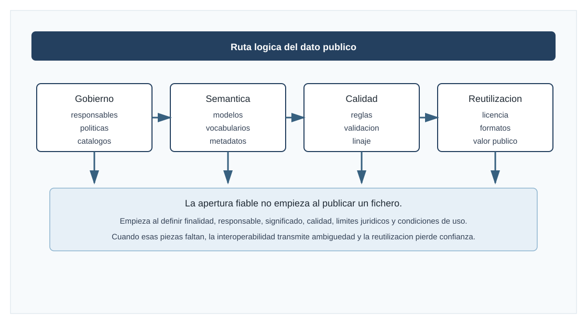
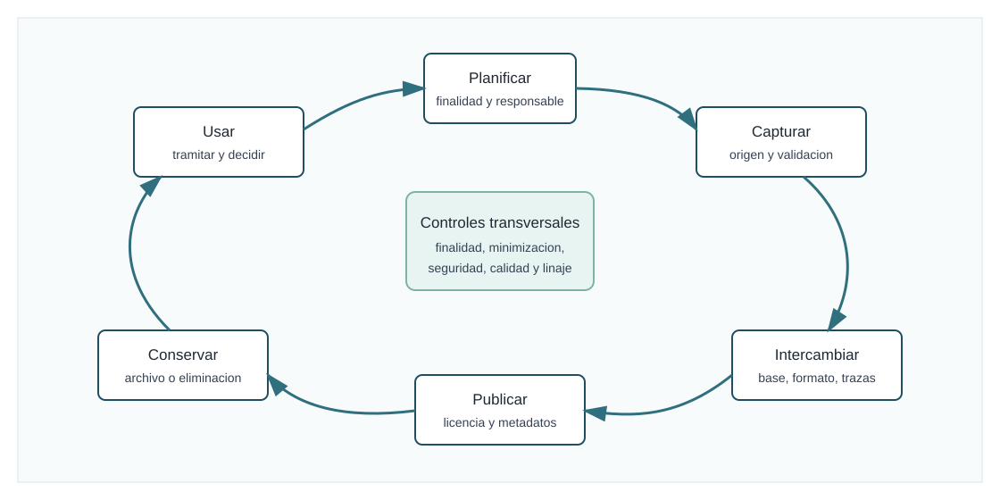
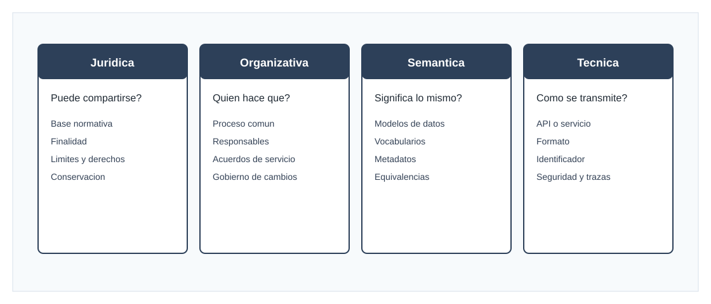
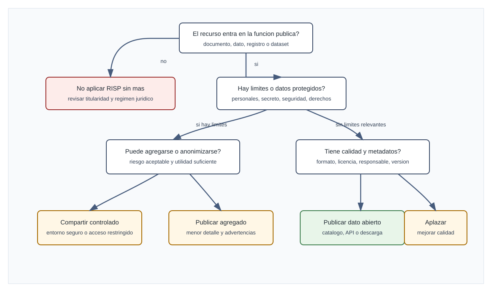

Visuales didacticos




Gobierno del dato, interoperabilidad semantica, calidad del dato y reutilizacion de la informacion publica
Este tema estudia como la Administracion publica convierte los datos en un activo juridico, organizativo y tecnico. El enfoque no parte de la tecnologia como fin, sino de la funcion publica: tramitar mejor, reducir cargas, proteger derechos, compartir informacion con significado comun, publicar datos utiles y permitir una reutilizacion segura. La idea central es que ningun dato publico es neutro. Todo dato tiene una fuente, una finalidad, una calidad, una responsabilidad, una semantica, unas condiciones de acceso y un ciclo de vida.
La materia exige estudiar juntas varias piezas que a menudo aparecen separadas: procedimiento administrativo, regimen juridico, interoperabilidad, seguridad, proteccion de datos, transparencia, reutilizacion, datos abiertos, metadatos, calidad y gobierno organizativo. Una respuesta A1 debe mostrar esa conexion y debe evitar dos reducciones: pensar que gobernar datos es comprar una plataforma, o pensar que reutilizar informacion publica es subir ficheros sin contexto.
Indice
- Orientacion de examen y mapa inicial.
- Definiciones esenciales.
- Marco normativo y politico.
- Gobierno del dato en la Administracion publica.
- Interoperabilidad semantica.
- Calidad del dato.
- Reutilizacion de la informacion publica.
- Datos abiertos, APIs, formatos y datos de alto valor.
- Proteccion de datos, seguridad y apertura responsable.
- Ejemplos y supuestos practicos guiados.
- Notas de test, errores frecuentes y repaso final.
- Plan de visuales y fuentes oficiales.
1. Orientacion de examen
En un examen A1, este tema suele exigir una respuesta transversal. No basta con enumerar normas sobre datos abiertos ni con describir formatos tecnicos. La respuesta fuerte debe relacionar cuatro planos:
- El plano organizativo: responsabilidades, politicas, roles, ciclo de vida, toma de decisiones y coordinacion entre unidades.
- El plano juridico: procedimiento administrativo, regimen juridico del sector publico, proteccion de datos, transparencia, reutilizacion, interoperabilidad y seguridad.
- El plano semantico y tecnico: modelos de datos, metadatos, vocabularios, estandares, identificadores, catalogos, APIs y formatos abiertos.
- El plano de valor publico: servicios mas simples, reduccion de cargas, rendicion de cuentas, reutilizacion economica y social, datos de alto valor, evidencia para politicas publicas y confianza ciudadana.
La trampa habitual es tratar el dato como un mero recurso informatico. En el sector publico, el dato es tambien evidencia administrativa, soporte de derechos, base de decisiones, activo reutilizable y objeto de garantias. Por eso, conceptos como calidad, interoperabilidad o reutilizacion no se responden con una lista de herramientas, sino con una explicacion de como se gobierna el dato desde su creacion hasta su conservacion, intercambio, publicacion o supresion.
Otra trampa frecuente es confundir transparencia con datos abiertos. La transparencia se orienta al acceso a informacion publica y al control democratico. Los datos abiertos y la reutilizacion se orientan a permitir que la informacion del sector publico sea usada de nuevo por personas, empresas, investigadores u otras Administraciones, en condiciones juridicas, tecnicas y economicas previsibles. Ambos ambitos se tocan, pero no son identicos: puede existir informacion accesible para transparencia que no sea reutilizable automaticamente en cualquier condicion, y puede existir informacion reutilizable publicada en formatos preparados para explotacion automatica.
2. Mapa inicial del tema
| Eje | Pregunta que resuelve | Conceptos clave | Resultado esperado |
|---|---|---|---|
| Gobierno del dato | Quien decide, cuida y responde por los datos? | politica de datos, roles, ciclo de vida, catalogo, linaje, riesgos | datos gestionados como activo publico |
| Interoperabilidad semantica | Entendemos todos lo mismo cuando intercambiamos datos? | vocabularios, modelos comunes, metadatos, ontologias, identificadores | intercambio con significado consistente |
| Calidad del dato | El dato es apto para el uso previsto? | exactitud, completitud, actualidad, consistencia, unicidad, trazabilidad | decisiones y servicios fiables |
| Reutilizacion | Puede usarse de nuevo la informacion publica? | datos abiertos, licencias, formatos, APIs, conjuntos de alto valor | valor social, economico y democratico |
| Garantias | Que limites protegen derechos e intereses publicos? | proteccion de datos, seguridad, confidencialidad, propiedad intelectual, secreto | apertura responsable y legal |
La secuencia logica para estudiar el tema es la siguiente: primero se define el dato como activo publico; despues se explica como se gobierna; a continuacion se conecta con la interoperabilidad semantica y tecnica; luego se desarrolla la calidad como requisito de confianza; finalmente se examina la reutilizacion de la informacion publica, sus obligaciones y limites.
3. Definiciones esenciales
3.1. Dato, informacion y conocimiento
Un dato es una representacion formalizada de hechos, conceptos o instrucciones, apta para ser comunicada, interpretada o procesada. Esta definicion es util porque evita reducir el dato a una celda de una hoja de calculo. Un dato puede aparecer en un registro administrativo, en un documento electronico, en una base de datos, en una medicion de sensores, en un catalogo de contratos, en un padron, en un expediente o en un servicio de consulta automatizada.
La informacion surge cuando los datos adquieren contexto. El numero "2025" aislado es un dato; "ejercicio presupuestario 2025 de una subvencion concedida" ya es informacion, porque se vincula a un objeto, una fecha, un procedimiento y una entidad responsable. El conocimiento aparece cuando esa informacion se interpreta para decidir, evaluar o actuar. Una Administracion que mejora la calidad de sus datos no solo ordena ficheros: aumenta la capacidad de decidir con evidencia.
En examen conviene distinguir estos tres niveles porque ayudan a explicar por que los metadatos son tan importantes. Un dato sin metadatos puede conservar la forma, pero perder significado. Si se publica un conjunto de datos sobre expedientes sin indicar fecha de actualizacion, unidad responsable, cobertura temporal, diccionario de campos y licencia, la reutilizacion sera debil aunque el fichero este disponible.
3.2. Gobierno del dato
El gobierno del dato es el conjunto de politicas, roles, procesos, estandares y controles mediante los cuales una organizacion asegura que sus datos se gestionan de forma coherente, segura, trazable, interoperable y orientada al valor. En el sector publico, este gobierno tiene una dimension adicional: debe garantizar legalidad, derechos de las personas interesadas, transparencia, conservacion documental, rendicion de cuentas y coordinacion interadministrativa.
Gobernar datos no equivale a centralizar todos los datos en una unica base. Tampoco significa que una unidad tecnologica decida por si sola. El gobierno del dato es una funcion institucional distribuida: las unidades de negocio conocen el significado y el uso administrativo; las unidades juridicas interpretan limites y garantias; las unidades tecnologicas materializan modelos, controles y servicios; los responsables de seguridad gestionan riesgos; y los responsables de transparencia, archivo o reutilizacion aseguran que la informacion se publica, conserva o transfiere adecuadamente.
3.3. Interoperabilidad
La interoperabilidad es la capacidad de organizaciones y sistemas para compartir datos, informacion y conocimiento, y para que lo compartido sea comprendido y usado correctamente. En el ambito publico espanol, el Esquema Nacional de Interoperabilidad distingue una vision multidimensional: organizativa, semantica y tecnica. Esta division es muy examinable.
La interoperabilidad organizativa se ocupa de acuerdos, procedimientos, responsabilidades y alineamiento de procesos. La interoperabilidad semantica se ocupa del significado: vocabularios, modelos de datos, definiciones comunes y metadatos. La interoperabilidad tecnica se ocupa de la conexion efectiva: formatos, protocolos, servicios, interfaces, identificadores y estandares.
La dimension semantica es el centro de este tema. Dos sistemas pueden conectarse tecnicamente y, aun asi, no ser interoperables de verdad si usan conceptos incompatibles. Por ejemplo, si un sistema entiende "unidad familiar" segun criterios tributarios y otro segun criterios de servicios sociales, no basta con enviar un campo llamado unidad_familiar; hay que explicar definicion, alcance, fecha de referencia, reglas de calculo y fuente.
3.4. Calidad del dato
La calidad del dato es el grado en que un dato resulta apto para un uso determinado. Esta definicion es preferible a una definicion absoluta. Un dato puede ser suficiente para una estadistica agregada, pero insuficiente para resolver un procedimiento individual; puede ser valido para una consulta historica, pero no para una decision en tiempo real; puede ser correcto tecnicamente, pero no estar legitimado para una reutilizacion concreta.
Las dimensiones mas frecuentes de calidad son exactitud, completitud, consistencia, actualidad, unicidad, validez, integridad, trazabilidad y disponibilidad. En el sector publico se anaden criterios de legalidad, proporcionalidad, conservacion, seguridad y transparencia sobre la procedencia del dato.
3.5. Reutilizacion de la informacion publica
La reutilizacion de la informacion del sector publico consiste en el uso de documentos o recursos de informacion que obran en poder de organismos publicos por personas fisicas o juridicas, con fines comerciales o no comerciales, siempre que ese uso no constituya una actividad administrativa publica. Esta idea se apoya en la Ley 37/2007, en la normativa europea de datos abiertos y en las normas tecnicas de interoperabilidad.
La reutilizacion no es una concesion discrecional sin reglas. El ordenamiento europeo y espanol impulsa que los datos publicos sean reutilizables, especialmente cuando estan en formatos abiertos, con metadatos, condiciones claras y acceso automatizable. Pero existen limites: proteccion de datos personales, seguridad publica, secreto, derechos de propiedad intelectual de terceros, confidencialidad estadistica, proteccion de intereses comerciales legitimos, informacion clasificada y otros supuestos previstos por la normativa aplicable.
4. Marco normativo y politico de referencia
El marco normativo debe estudiarse como un sistema. No hay una unica ley de "gobierno del dato" que lo explique todo. El tema se apoya en normas de procedimiento, regimen juridico, interoperabilidad, reutilizacion, datos abiertos, proteccion de datos, seguridad y marco europeo de la economia del dato.
| Norma o instrumento | Papel en el tema | Idea que conviene recordar |
|---|---|---|
| Ley 39/2015, del Procedimiento Administrativo Comun | Relacion electronica, documentos, datos aportados por interesados y tramitacion administrativa | el dato sirve al procedimiento y a los derechos de las personas interesadas |
| Ley 40/2015, de Regimen Juridico del Sector Publico | Funcionamiento electronico, cooperacion, ENI y ENS | la interoperabilidad es un deber estructural del sector publico |
| Real Decreto 4/2010, Esquema Nacional de Interoperabilidad | Criterios de interoperabilidad organizativa, semantica y tecnica | la interoperabilidad se incorpora desde el diseno y durante todo el ciclo de vida |
| Real Decreto 203/2021 | Desarrollo reglamentario del funcionamiento electronico | refuerza la actuacion electronica y la cooperacion mediante medios digitales |
| Ley 37/2007, sobre reutilizacion de la informacion del sector publico | Regimen juridico de la reutilizacion | la informacion publica debe poder reutilizarse con condiciones claras y limites legales |
| Real Decreto 1495/2011 | Desarrollo de la reutilizacion en el sector publico estatal | concreta obligaciones y modalidades de reutilizacion en el ambito estatal |
| NTI de reutilizacion de recursos de informacion | Pautas de seleccion, identificacion, descripcion, formato, condiciones de uso y puesta a disposicion | convierte la reutilizacion en una practica interoperable |
| Directiva (UE) 2019/1024 | Datos abiertos y reutilizacion de la informacion del sector publico | impulsa formatos abiertos, datos dinamicos y conjuntos de alto valor |
| Reglamento de Ejecucion (UE) 2023/138 | Conjuntos de datos de alto valor | identifica categorias prioritarias y requisitos de publicacion |
| Reglamento (UE) 2022/868, Gobernanza de Datos | Reutilizacion de ciertas categorias protegidas, intermediacion y altruismo de datos | integra la reutilizacion en la gobernanza europea del dato |
| Reglamento (UE) 2023/2854, Datos | Acceso y uso justo de datos en la economia del dato | amplia el marco europeo de acceso a datos, con aplicacion progresiva |
| Reglamento (UE) 2024/903, Europa Interoperable | Interoperabilidad del sector publico en la Union | conecta interoperabilidad transfronteriza, evaluaciones y soluciones reutilizables |
| Reglamento (UE) 2016/679 y Ley Organica 3/2018 | Proteccion de datos personales | apertura y reutilizacion no eliminan las garantias sobre datos personales |
| Real Decreto 311/2022, Esquema Nacional de Seguridad | Seguridad de la informacion y servicios electronicos | la confianza en los datos depende tambien de confidencialidad, integridad, disponibilidad y trazabilidad |
Para examen, la clave no es memorizar todas las fechas, sino saber ubicar cada pieza. Ley 40/2015 y ENI explican interoperabilidad; Ley 37/2007 y Directiva 2019/1024 explican reutilizacion; RGPD y Ley Organica 3/2018 explican limites de datos personales; ENS explica seguridad; y los reglamentos europeos recientes muestran la evolucion hacia espacios de datos, interoperabilidad transfronteriza y economia del dato.
5. Gobierno del dato en la Administracion publica
Marco normativo oficial y europeo
El marco normativo debe leerse por capas. Primero estan las leyes que ordenan el procedimiento, el funcionamiento electronico y la cooperacion entre Administraciones. Despues aparecen los esquemas nacionales, las normas tecnicas y las obligaciones sobre reutilizacion. Sobre ese bloque se superponen la proteccion de datos, la seguridad, la transparencia y el Derecho europeo de datos. La respuesta de examen debe mostrar como se combinan, no solo recitarlas.
Tabla de normas principales
| Bloque | Norma o instrumento | Funcion en el tema | Idea que debe quedar en examen |
|---|---|---|---|
| Procedimiento administrativo | Ley 39/2015, del Procedimiento Administrativo Comun de las Administraciones Publicas | Regula derechos de las personas interesadas, expediente, documentos, registros, notificaciones y procedimiento | La administracion electronica no es solo tecnologia; condiciona validez, eficacia y derechos procedimentales |
| Regimen juridico del sector publico | Ley 40/2015, de Regimen Juridico del Sector Publico | Regula funcionamiento, cooperacion, relaciones electronicas entre Administraciones y sector publico institucional | La interoperabilidad tambien es organizativa: cooperar, intercambiar informacion y coordinar servicios |
| Actuacion electronica | Real Decreto 203/2021 | Desarrolla la actuacion y funcionamiento del sector publico por medios electronicos | Conecta procedimiento, documentos electronicos, sedes, registros, identificacion, asistencia y archivo electronico |
| Interoperabilidad | Real Decreto 4/2010, Esquema Nacional de Interoperabilidad | Fija criterios para interoperabilidad organizativa, semantica y tecnica | Es la norma basica para explicar formatos, modelos de datos, metadatos, estandares y conservacion |
| Seguridad | Real Decreto 311/2022, Esquema Nacional de Seguridad | Establece principios, requisitos y medidas para proteger informacion y servicios | Sin seguridad no hay confianza ni reutilizacion responsable; la seguridad se ajusta a riesgos y categorias |
| Reutilizacion | Ley 37/2007, sobre reutilizacion de la informacion del sector publico | Marco estatal de reutilizacion de documentos del sector publico | Regla general de reutilizacion con limites; formatos abiertos y licencias claras cuando sea posible |
| Desarrollo RISP estatal | Real Decreto 1495/2011 | Desarrolla la reutilizacion en el sector publico estatal | Concreta obligaciones estatales, modalidades y condiciones aplicables a documentos reutilizables |
| Modificacion RISP | Ley 18/2015 | Incorpora cambios de la Directiva 2013/37/UE | Refuerza obligacion de autorizar reutilizacion y formatos abiertos legibles por maquina |
| Datos abiertos UE | Directiva (UE) 2019/1024 | Marco europeo de datos abiertos y reutilizacion de informacion del sector publico | Principio de reutilizacion, datos dinamicos, investigacion financiada publicamente y datos de alto valor |
| Transposicion datos abiertos | Real Decreto-ley 24/2021 | Modifica la Ley 37/2007 para incorporar la Directiva 2019/1024 | Introduce el enfoque actualizado de datos abiertos, datos dinamicos y alto valor en el marco espanol |
| Datos de alto valor | Reglamento de Ejecucion (UE) 2023/138 | Lista categorias y condiciones de publicacion/reutilizacion | No basta publicar: exige condiciones tecnicas, licencias abiertas, gratuidad y acceso adecuado |
| Gobernanza europea de datos | Reglamento (UE) 2022/868, Data Governance Act | Regula reutilizacion de datos protegidos del sector publico, intermediarios, altruismo de datos y gobernanza europea | No es una ley de datos abiertos; habilita reutilizacion segura de datos que no pueden abrirse libremente |
| Acceso y uso de datos | Reglamento (UE) 2023/2854, Data Act | Establece reglas horizontales de acceso justo y uso de datos, incluidos supuestos B2G excepcionales | Aporta reglas de economia del dato, intercambio y portabilidad; no deroga RGPD ni normas sectoriales |
| Interoperabilidad UE | Reglamento (UE) 2024/903, Europa Interoperable | Crea medidas de interoperabilidad transfronteriza del sector publico de la Union | Refuerza evaluaciones de interoperabilidad y soluciones comunes europeas |
| Proteccion de datos | Reglamento (UE) 2016/679, RGPD | Marco general de tratamiento de datos personales | Legalidad, finalidad, minimizacion, exactitud, seguridad, responsabilidad proactiva y derechos |
| Proteccion de datos en Espana | Ley Organica 3/2018, LOPDGDD | Adapta y complementa RGPD; regula derechos digitales y autoridades | En sector publico, conecta transparencia, acceso, publicidad activa y proteccion de datos |
| Transparencia | Ley 19/2013, de transparencia, acceso a informacion publica y buen gobierno | Publicidad activa, derecho de acceso y limites | Transparencia no equivale a reutilizacion ni anula proteccion de datos |
| Identidad y confianza | Reglamento (UE) 910/2014 eIDAS, modificado por Reglamento (UE) 2024/1183 | Identificacion electronica, servicios de confianza y cartera europea de identidad digital | La confianza electronica permite intercambio y prueba; la reforma europea refuerza identidad digital interoperable |
| Servicios de confianza en Espana | Ley 6/2020 | Regula aspectos nacionales de servicios electronicos de confianza | Complementa eIDAS en prestadores y efectos nacionales |
| Accesibilidad | Real Decreto 1112/2018 | Accesibilidad de webs y apps del sector publico | Un portal de datos o sede electronica debe ser accesible; la apertura no puede excluir por diseno |
| Informacion geografica | Ley 14/2010, infraestructuras y servicios de informacion geografica en Espana | Transpone el enfoque INSPIRE para datos y servicios geograficos | La informacion geografica es caso clasico de interoperabilidad semantica y tecnica |
| Ciberseguridad UE | Directiva (UE) 2022/2555, NIS2 | Marco europeo de nivel comun de ciberseguridad | Es relevante como contexto de riesgos, aunque en Administracion espanola el ENS sigue siendo referencia directa |
| Inteligencia artificial | Reglamento (UE) 2024/1689 | Reglas de IA, con exigencias de datos y gobernanza para sistemas de alto riesgo | La calidad y gobernanza de datos son condicion previa para IA administrativa fiable |
Estructura del marco espanol
Procedimiento, regimen juridico y administracion electronica
La Ley 39/2015 y la Ley 40/2015 son la base del funcionamiento administrativo contemporaneo. Para este tema importan menos como leyes generales y mas como soporte juridico de la administracion orientada al dato. La Ley 39/2015 regula derechos de las personas interesadas, documentos, copias, registros, expediente administrativo y notificaciones. La Ley 40/2015 regula funcionamiento del sector publico, relaciones interadministrativas, cooperacion y principios de actuacion. Ambas explican por que el dato publico no es un simple fichero tecnico: puede formar parte de un expediente, producir efectos juridicos, acreditar hechos y sostener actos administrativos.
Un punto de examen frecuente es el derecho de las personas interesadas a no aportar documentos que ya se encuentren en poder de las Administraciones o que hayan sido elaborados por ellas, con las reglas y consentimientos o bases habilitantes que procedan. Ese principio exige interoperabilidad real. Si una Administracion no puede consultar datos de otra de forma segura, trazable y juridicamente habilitada, el derecho se convierte en una declaracion formal. Por eso la interoperabilidad no es un accesorio tecnico, sino una condicion de eficacia del procedimiento.
El Real Decreto 203/2021 desarrolla la actuacion y el funcionamiento electronico del sector publico. Su valor para este tema esta en que ordena piezas que suelen aparecer separadas en el estudio: sede electronica, punto de acceso, identificacion y firma, registros electronicos, documentos administrativos electronicos, copias autenticas, archivo electronico, comunicaciones y asistencia a personas no obligadas o con dificultades. En clave de gobierno del dato, este reglamento recuerda que la informacion administrativa debe nacer, circular, conservarse y acreditarse dentro de un marco de autenticidad, integridad, trazabilidad y disponibilidad.
Esquema Nacional de Interoperabilidad
El Real Decreto 4/2010 regula el Esquema Nacional de Interoperabilidad. Su objeto es asegurar un nivel adecuado de interoperabilidad organizativa, semantica y tecnica de los datos, informaciones y servicios gestionados por las Administraciones publicas. Tambien incorpora criterios sobre normalizacion, conservacion de la informacion, formatos y aplicaciones.
La interoperabilidad organizativa se refiere a la capacidad de las Administraciones para alinear procesos, responsabilidades y acuerdos de servicio. La tecnica se refiere a protocolos, redes, estandares, formatos y soluciones tecnologicas. La semantica se centra en el significado de los datos. Esta ultima es la mas importante para el tema: obliga a que los datos intercambiados tengan definiciones y codificaciones comunes o, al menos, mapeos explicitos.
El ENI se desarrolla mediante Normas Tecnicas de Interoperabilidad. Para este tema destacan la NTI de Documento Electronico, Expediente Electronico, Digitalizacion, Copiado Autentico y Conversion, Politica de Gestion de Documentos Electronicos, Catalogo de Estandares, Protocolos de Intermediacion de Datos, Relacion de Modelos de Datos y Reutilizacion de Recursos de la Informacion. No es necesario memorizar cada detalle, pero si saber que estas NTI convierten el principio de interoperabilidad en condiciones practicas.
La NTI de Relacion de Modelos de Datos es especialmente relevante para la interoperabilidad semantica. Su finalidad es establecer condiciones para publicar modelos de datos comunes o referidos a materias sujetas a intercambio de informacion con ciudadanos y otras Administraciones, junto con definiciones y codificaciones asociadas. La referencia al Centro de Interoperabilidad Semantica expresa una idea esencial: si cada organo define sus datos de forma aislada, los intercambios seran fragiles y costosos.
La NTI de Catalogo de Estandares ordena los estandares aplicables a la interoperabilidad. En examen conviene evitar una respuesta puramente tecnologica. Lo importante es decir que el uso de estandares abiertos o comunes reduce dependencia tecnologica, facilita conservacion, hace posible la reutilizacion y disminuye barreras para ciudadanos, empresas y otras Administraciones.
La NTI de Reutilizacion de Recursos de la Informacion conecta ENI y RISP. Su objetivo es establecer pautas basicas para reutilizar documentos y recursos de informacion elaborados o custodiados por el sector publico. Es una norma puente: la Ley 37/2007 fija el marco juridico de reutilizacion y la NTI aporta criterios tecnicos para publicar recursos reutilizables con metadatos, identificadores, formatos y condiciones comprensibles.
Esquema Nacional de Seguridad
El Real Decreto 311/2022 regula el Esquema Nacional de Seguridad. En un tema sobre datos es imprescindible porque no puede existir gobierno del dato sin seguridad. El ENS protege la informacion tratada y los servicios prestados por medios electronicos. Sus principios incluyen seguridad integral, gestion de riesgos, prevencion, deteccion, respuesta, conservacion, reevaluacion periodica y diferenciacion de responsabilidades.
La conexion con calidad del dato es directa. La seguridad no solo protege confidencialidad. Tambien protege integridad, disponibilidad, autenticidad y trazabilidad. Un dato alterado, no disponible o sin evidencia de origen pierde valor administrativo. Por eso el ENS debe verse como parte del ciclo de vida del dato: clasificacion, analisis de riesgos, controles de acceso, registro de actividad, continuidad, auditoria y respuesta a incidentes.
En reutilizacion, el ENS evita dos errores. El primero es pensar que abrir datos significa relajar seguridad. La apertura responsable requiere proceso seguro de seleccion, revision, publicacion y mantenimiento. El segundo es pensar que seguridad justifica cerrar cualquier dato. La seguridad debe aplicarse de forma proporcionada y motivada, no como excusa generica contra la transparencia o la reutilizacion.
Marco europeo de datos
Directiva de datos abiertos y reutilizacion
La Directiva (UE) 2019/1024 es el eje europeo de datos abiertos y reutilizacion de la informacion del sector publico. Reordena la antigua politica PSI e impulsa el potencial socioeconomico de la informacion publica. Sus ideas clave son: principio de reutilizacion, formatos abiertos y legibles por maquina cuando proceda, metadatos, datos dinamicos, datos de investigacion financiada publicamente, limitacion de acuerdos exclusivos y conjuntos de datos de alto valor.
Espana incorporo este marco mediante el Real Decreto-ley 24/2021, que modifico la Ley 37/2007. Para examen, lo relevante no es citar solo la Directiva, sino explicar que en Espana el regimen operativo esta en la Ley 37/2007 consolidada, completada por su desarrollo reglamentario estatal y por las normas tecnicas de interoperabilidad.
Los datos dinamicos merecen atencion. Son datos digitales sujetos a actualizaciones frecuentes o en tiempo real, por su volatilidad u obsolescencia rapida. En la Administracion aparecen en movilidad, meteorologia, sensores, medio ambiente o servicios urbanos. El reto no es solo publicarlos, sino ofrecer mecanismos tecnicos adecuados, normalmente APIs, con metadatos, disponibilidad y condiciones estables.
Los conjuntos de datos de alto valor, desarrollados por el Reglamento de Ejecucion (UE) 2023/138, refuerzan la apertura de categorias concretas. La obligacion europea apunta a que determinados datos se publiquen gratuitamente, con licencias abiertas, en formatos legibles por maquina y mediante APIs cuando proceda. En un examen, esta categoria permite mostrar madurez: la Union no solo promueve apertura general, sino que prioriza datos con impacto economico, social, ambiental y democratico.
Reglamento de Gobernanza de Datos
El Reglamento (UE) 2022/868, conocido como Data Governance Act, no debe confundirse con la Directiva de datos abiertos. Su funcion principal no es obligar a abrir libremente datos publicos, sino crear condiciones de confianza para reutilizar determinadas categorias de datos protegidos del sector publico y para ordenar mecanismos de intermediacion y altruismo de datos.
La idea clave es que hay datos valiosos que no pueden publicarse como datos abiertos porque estan protegidos por confidencialidad comercial, estadistica, propiedad intelectual de terceros, proteccion de datos personales u otros limites. El Reglamento no elimina esos limites. Crea un marco para permitir reutilizacion bajo condiciones, con garantias tecnicas, juridicas y organizativas. Esto es esencial para politicas de salud, investigacion, movilidad, energia, medio ambiente o innovacion publica.
Tambien regula servicios de intermediacion de datos y organizaciones de altruismo de datos. La logica es aumentar la confianza en el intercambio, separando funciones y evitando que el intermediario utilice los datos para fines incompatibles. En examen se puede expresar asi: la gobernanza europea de datos intenta que haya mas disponibilidad de datos, pero no a costa de privacidad, secretos protegidos o perdida de control.
Reglamento de Datos
El Reglamento (UE) 2023/2854, Data Act, establece normas armonizadas sobre acceso justo y uso de datos. Su foco principal esta en datos generados por productos conectados y servicios relacionados, portabilidad de servicios de tratamiento de datos, clausulas contractuales abusivas y puesta a disposicion de datos a organismos publicos en situaciones de necesidad excepcional.
Para Administracion publica interesa por dos motivos. Primero, porque introduce un canal B2G en supuestos excepcionales, por ejemplo emergencias publicas o necesidades justificadas conforme al reglamento. Segundo, porque refuerza la interoperabilidad en espacios de datos y servicios de tratamiento, un aspecto cada vez mas relevante para una Administracion que consume, comparte y publica datos en ecosistemas europeos.
Reglamento sobre la Europa Interoperable
El Reglamento (UE) 2024/903 establece medidas para garantizar un alto nivel de interoperabilidad del sector publico en toda la Union. Introduce un marco europeo mas fuerte para servicios publicos digitales transfronterizos, evaluaciones de interoperabilidad y soluciones comunes. Su importancia para el tema es que la interoperabilidad deja de ser solo una politica tecnica nacional y se convierte en una prioridad juridica europea.
Este Reglamento es especialmente util para explicar la dimension europea de la interoperabilidad semantica. Una Administracion espanola no intercambia datos solo dentro de Espana: participa en servicios transfronterizos, espacios de datos, reconocimiento de identidad, movilidad, contratacion, seguridad social, justicia y mercado interior. Por eso los modelos de datos, vocabularios, identificadores y reglas comunes deben alinearse con marcos europeos cuando proceda.
Proteccion de datos, transparencia y reutilizacion
RGPD y LOPDGDD
El RGPD y la LOPDGDD son obligatorios cuando el dato permite identificar directa o indirectamente a una persona fisica. En Administracion publica, las bases juridicas habituales no son el consentimiento como regla general, sino el cumplimiento de una obligacion legal, el ejercicio de poderes publicos o una mision realizada en interes publico, segun el caso. Esto es muy importante para examen: pedir consentimiento al ciudadano no siempre es adecuado ni suficiente cuando la Administracion actua por potestad publica.
Los principios del RGPD encajan directamente con la calidad del dato. La licitud exige base juridica. La limitacion de finalidad impide reutilizar datos personales para fines incompatibles sin habilitacion. La minimizacion exige tratar solo los datos necesarios. La exactitud obliga a mantener datos correctos y actualizados. La limitacion del plazo de conservacion exige gestionar ciclo de vida y archivo. La integridad y confidencialidad exigen seguridad. La responsabilidad proactiva obliga a demostrar cumplimiento.
La LOPDGDD complementa el RGPD en Espana y conecta expresamente la publicidad activa y el acceso a la informacion publica con el regimen de proteccion de datos. La regla practica es que transparencia y reutilizacion deben ponderarse. Si prevalece el derecho fundamental a la proteccion de datos, la informacion no se abre o se abre tras anonimizar, disociar o limitar campos. Si prevalece el interes publico y hay habilitacion, puede publicarse con las garantias correspondientes.
La figura del delegado de proteccion de datos tiene especial importancia en autoridades y organismos publicos. En proyectos de datos debe intervenir de forma temprana cuando hay riesgos relevantes, no solo revisar al final. Las evaluaciones de impacto, los registros de actividades de tratamiento, la privacidad desde el diseno y por defecto, y las medidas de seguridad son instrumentos de gobierno del dato.
Transparencia y acceso a informacion publica
La Ley 19/2013 regula publicidad activa, derecho de acceso y buen gobierno. Su relacion con reutilizacion se resume en tres ideas. Primera, la transparencia permite conocer informacion publica. Segunda, la reutilizacion permite usar documentos para otros fines, comerciales o no, bajo condiciones. Tercera, ambas estan limitadas por proteccion de datos y otros intereses protegidos.
Un error habitual es pensar que si algo se publica por transparencia automaticamente puede reutilizarse sin condiciones. No siempre. Puede haber condiciones de licencia, obligacion de citar fuente, fecha de actualizacion, prohibicion de desnaturalizar el sentido de la informacion o limites derivados de datos personales. Tambien puede ocurrir lo contrario: datos preparados para reutilizacion pueden publicarse en portales especificos aunque no formen parte de publicidad activa estricta.
Reutilizacion y datos abiertos en Espana
La Ley 37/2007 establece el marco general de reutilizacion de informacion del sector publico. La regla de fondo es favorable a la reutilizacion, pero no absoluta. Quedan fuera o limitados documentos sometidos a restricciones de acceso, confidencialidad, seguridad, defensa, secreto estadistico, propiedad intelectual de terceros, datos personales u otros regimenes especiales. La Administracion debe permitir reutilizacion en condiciones claras, justas, transparentes y no discriminatorias.
Las modalidades de reutilizacion pueden ir desde puesta a disposicion sin condiciones hasta licencias tipo, solicitud previa o acuerdos especificos en casos previstos. En un enfoque de datos abiertos se prefieren licencias abiertas con minimas restricciones. No obstante, incluso en datos abiertos pueden mantenerse condiciones razonables: citar fuente, no alterar el sentido, mencionar fecha de actualizacion y no inducir a que la Administracion patrocina el producto reutilizador.
El Real Decreto 1495/2011 concreta el regimen para el sector publico estatal. Su importancia es practica: obliga a pensar en catalogos, puntos de acceso, condiciones tipo, informacion reutilizable y responsabilidades. La Administracion no responde del uso que terceros hagan de la informacion reutilizada si cumple su marco, pero si debe cuidar calidad, actualizacion, metadatos y advertencias para evitar dano por informacion defectuosa o descontextualizada.
Gobierno del dato en la Administracion publica
Gobernar datos significa decidir y documentar quien responde por el significado, la calidad, la seguridad, el acceso, la conservacion y la reutilizacion de la informacion publica. En el sector publico esa responsabilidad se proyecta sobre expedientes, registros, derechos de la ciudadania, indicadores, servicios digitales y datos abiertos.
El gobierno del dato es el conjunto de principios, responsabilidades, procesos, normas y mecanismos de control que permiten que los datos de una Administracion publica sean comprensibles, fiables, seguros, localizables, reutilizables y utiles para prestar servicios, rendir cuentas y tomar decisiones. No equivale a comprar una herramienta de catalogacion, ni a crear un almacen central de datos, ni a publicar datasets abiertos sin criterio. Es una funcion permanente de direccion y gestion que conecta la estrategia institucional con la operacion diaria de expedientes, registros, servicios digitales, estadisticas, indicadores, interoperabilidad y reutilizacion de informacion publica.
En una Administracion publica el gobierno del dato tiene una condicion especial: los datos no son solo un activo economico o tecnico, sino tambien evidencia de derechos, obligaciones, potestades, actuaciones administrativas y garantias ciudadanas. Un padron, un registro de ayudas, un expediente sancionador, un sistema tributario, una historia social, una base de datos de contratos o un catalogo de patrimonio publico no pueden tratarse como meros ficheros internos. Su calidad afecta a personas concretas, a la igualdad en el acceso a servicios, a la eficacia del gasto publico, a la transparencia, a la supervision y a la confianza institucional.
La idea central para examen es sencilla: el gobierno del dato define quien decide, quien responde, como se documenta, como se controla y como se mejora el dato durante todo su ciclo de vida. La gestion del dato ejecuta esas decisiones en sistemas, procesos y equipos. La arquitectura de datos proporciona modelos, integraciones, plataformas y estandares. La proteccion de datos, la seguridad, la transparencia, la interoperabilidad y la reutilizacion aportan limites juridicos y condiciones de uso. Ninguna de esas piezas sustituye a las demas.
2. Principios de gobierno del dato
El primer principio es la orientacion a finalidad publica. Un dato debe gobernarse segun la funcion administrativa que soporta: tramitar un procedimiento, acreditar una condicion, calcular una prestacion, inspeccionar, planificar, informar a la ciudadania, evaluar politicas publicas o facilitar reutilizacion. Esta finalidad permite distinguir entre datos operativos, datos estadisticos, datos maestros, datos abiertos, datos personales, datos protegidos, datos de referencia y datos de evidencia administrativa.
El segundo principio es responsabilidad identificable. Cada conjunto de datos relevante necesita una unidad responsable del significado, calidad, reglas de uso y ciclo de vida. Si nadie es responsable del dato, la organizacion acaba delegando decisiones sustantivas en tecnicos, proveedores o usos informales. La responsabilidad no significa que una persona introduzca todos los registros, sino que existe una autoridad funcional capaz de definir el dato correcto, resolver conflictos, priorizar mejoras y responder ante auditorias.
El tercer principio es calidad proporcional al riesgo y al uso. No todos los datos requieren el mismo nivel de control. Un dato usado para conceder una ayuda, imponer una sancion, identificar una persona o publicar indicadores oficiales exige controles mas estrictos que un dato exploratorio. La calidad no es un ideal abstracto; debe medirse respecto a dimensiones como exactitud, completitud, actualidad, consistencia, unicidad, validez, trazabilidad y disponibilidad.
El cuarto principio es interoperabilidad desde el diseno. El dato debe poder circular entre organos, Administraciones y sistemas respetando competencias, bases juridicas, seguridad y proteccion de datos. La interoperabilidad no empieza al construir una API, sino al definir conceptos comunes, codigos, identificadores, metadatos, formatos, reglas de intercambio y acuerdos organizativos. Si cada unidad define "beneficiario", "domicilio", "centro", "empresa" o "expediente" de manera distinta, la integracion tecnica solo mueve inconsistencias.
El quinto principio es minimizacion y necesidad. La Administracion debe evitar pedir, conservar o difundir mas datos de los necesarios para la finalidad legitima. Este principio es critico cuando hay datos personales o categorias especialmente sensibles, pero tambien sirve para reducir costes, deuda tecnica y exposicion a errores. Un buen gobierno del dato no acumula datos por reflejo; decide que datos son necesarios, durante cuanto tiempo, bajo que reglas y con que controles.
El sexto principio es transparencia interna y externa. Internamente, los equipos deben saber que datos existen, que significan, quien los gestiona, que calidad tienen y como pueden solicitar acceso. Externamente, cuando proceda, la ciudadania y los reutilizadores deben encontrar informacion publica comprensible, actualizada y en condiciones claras. La transparencia no elimina los limites por proteccion de datos, seguridad, secreto estadistico, propiedad intelectual o intereses publicos protegidos.
El septimo principio es trazabilidad. Debe ser posible reconstruir el origen de un dato, las transformaciones que ha sufrido, las reglas aplicadas, los intercambios realizados y las decisiones relevantes. La trazabilidad permite auditar, corregir errores, explicar resultados automatizados, depurar responsabilidades y mejorar procesos. Sin linaje, un indicador puede parecer objetivo aunque provenga de extracciones manuales, equivalencias no documentadas o reglas cambiadas sin control.
El octavo principio es reutilizacion segura y ordenada. La informacion publica tiene valor social y economico cuando puede ser reutilizada, pero esa reutilizacion debe respetar derechos, limites normativos, calidad minima, condiciones de licencia, metadatos adecuados y actualizacion sostenible. Publicar un conjunto de datos sin descripcion, sin fecha, sin responsable y sin formato estable no es apertura real; es traslado de incertidumbre al reutilizador.
3. Definiciones operativas
Dato es una representacion registrada de un hecho, atributo, medida, relacion o evento. En la Administracion puede representar una persona interesada, una solicitud, un acto administrativo, una resolucion, una fecha, una direccion, un pago, una infraccion, un contrato, un inmueble o un indicador. El dato por si solo no garantiza significado: necesita contexto, reglas y metadatos.
Informacion es dato interpretado en un contexto. Por ejemplo, una fecha aislada es un dato; la fecha de presentacion de una solicitud dentro de un expediente es informacion que puede determinar plazos, admision, silencio administrativo o efectos juridicos.
Conjunto de datos es una coleccion organizada de datos que se gestiona como unidad. Puede ser una tabla, un fichero, una vista, una API, un registro administrativo, una serie estadistica o un conjunto publicado para reutilizacion. En gobierno del dato interesa identificarlo por nombre, responsable, finalidad, campos principales, calidad, restricciones, ciclo de vida y condiciones de acceso.
Dato maestro es un dato nuclear, compartido y relativamente estable sobre entidades esenciales: personas, organos, unidades administrativas, expedientes, procedimientos, territorios, centros, proveedores, activos o codigos. Su mala gestion provoca duplicidades e incoherencias en muchos sistemas.
Dato de referencia es un conjunto de valores normalizados que otros sistemas usan para clasificar o validar informacion: codigos de municipios, tipos de via, catalogos de procedimientos, clasificaciones economicas, unidades organicas, estados de expediente o tipos documentales. Su valor esta en que reduce ambiguedad y facilita interoperabilidad.
Metadato es dato sobre el dato. Describe significado, estructura, origen, responsable, calidad, formato, licencia, fecha de actualizacion, periodo temporal, cobertura territorial, sensibilidad, restricciones, esquema, vocabulario o linaje. Un catalogo sin metadatos suficientes no permite localizar ni evaluar un conjunto de datos.
Linaje del dato es la descripcion de su recorrido desde el origen hasta su uso: fuentes, cargas, transformaciones, reglas de negocio, validaciones, agregaciones, cambios de formato, intercambios y consumos. El linaje puede documentarse a nivel de conjunto, tabla, campo, API, proceso o indicador.
Stewardship es la funcion de custodia funcional del dato. El data steward no suele ser el propietario juridico ni el administrador tecnico, sino la persona o equipo que vela por definiciones, reglas, calidad, incidencias, documentacion y uso correcto en un dominio concreto.
Dominio de datos es un area funcional o conceptual con datos relacionados y responsabilidades coherentes. En una Administracion pueden existir dominios como poblacion y territorio, expedientes y procedimientos, recursos humanos, contratacion, subvenciones, tributario, servicios sociales, salud publica, urbanismo, educacion, movilidad, medio ambiente o transparencia.
Catalogo de datos es el inventario gobernado de conjuntos de datos, fuentes, APIs, informes, indicadores y recursos relacionados. Debe permitir descubrir datos, conocer su significado, responsable, calidad, restricciones y condiciones de uso. Puede tener una parte interna para gestion y otra publica para reutilizacion.
Politica de datos es una norma interna de alto nivel que fija principios, roles, decisiones, obligaciones y controles sobre los datos. Puede desarrollarse en procedimientos, guias, modelos de metadatos, criterios de calidad, reglas de acceso, instrucciones de conservacion y acuerdos de intercambio.
4. Roles y responsabilidades
El gobierno del dato requiere una distribucion clara de responsabilidades. En una Administracion, la dificultad habitual es que los datos atraviesan organos con competencias distintas. La unidad que captura un dato puede no ser la que lo usa para un indicador, lo publica como dato abierto, lo intercambia con otra Administracion o responde ante una reclamacion. Por eso conviene separar propiedad funcional, custodia, administracion tecnica, seguridad, proteccion de datos y consumo.
La alta direccion o el organo de gobierno impulsa la estrategia de datos, aprueba la politica general, resuelve prioridades y garantiza recursos. Su papel no es definir cada campo, sino convertir el dato en asunto institucional. Sin patrocinio directivo, el gobierno del dato suele quedar reducido a iniciativas tecnicas aisladas.
El responsable funcional del dato, tambien llamado data owner en algunas organizaciones, decide sobre el significado, reglas de negocio, nivel de calidad esperado y usos permitidos dentro de su competencia. Debe poder validar definiciones, aceptar indicadores, priorizar correcciones y participar en acuerdos de intercambio. En el sector publico, esta figura debe alinearse con competencias organicas y con responsabilidad sobre procedimientos o servicios.
El data steward o custodio funcional trabaja en la gestion cotidiana del dato. Revisa definiciones, mantiene metadatos, analiza incidencias, propone reglas de calidad, coordina usuarios, documenta excepciones y ayuda a que los datos se usen correctamente. Es una figura especialmente util porque traduce entre el lenguaje del negocio publico y el lenguaje tecnico.
El responsable tecnico o administrador de plataforma gestiona sistemas, bases de datos, integraciones, rendimiento, copias, disponibilidad, despliegues y controles tecnicos. No deberia decidir por si solo el significado juridico o funcional de los datos, aunque su conocimiento es imprescindible para evaluar viabilidad, riesgos y automatizaciones.
El responsable de seguridad vela por confidencialidad, integridad, disponibilidad, autenticidad y trazabilidad tecnica. Interviene en clasificacion de activos, controles de acceso, registro de actividad, continuidad, cifrado, gestion de vulnerabilidades y requisitos de seguridad en intercambios.
El delegado o responsable de proteccion de datos asesora y supervisa el cumplimiento cuando hay tratamientos de datos personales. Su funcion no consiste en bloquear cualquier uso de datos, sino en asegurar que existe base juridica, informacion adecuada, minimizacion, limitacion de finalidad, medidas de seguridad, gestion de derechos y evaluacion de riesgos cuando proceda.
La unidad de transparencia, reutilizacion o datos abiertos participa en publicacion de informacion, licencias, formatos, metadatos publicos, demandas de reutilizadores, actualizacion de datasets y coherencia con portales de datos. Debe coordinarse con las unidades responsables para no publicar informacion descontextualizada o con riesgos no evaluados.
Los consumidores de datos son unidades, empleados publicos, sistemas, cuadros de mando, servicios externos, reutilizadores o ciudadanos que usan datos. Tambien tienen responsabilidades: respetar condiciones de uso, no alterar significado, comunicar errores, no crear copias opacas y no usar datos para finalidades incompatibles.
| Rol | Decision principal | Evidencia que debe producir | Riesgo si falta |
|---|---|---|---|
| Alta direccion | Prioridades, politica y recursos | Politica de datos, comite, hoja de ruta | Iniciativas aisladas sin autoridad |
| Responsable funcional | Significado, reglas y calidad esperada | Glosario, reglas de negocio, criterios de aceptacion | Definiciones contradictorias |
| Data steward | Custodia diaria y mejora | Metadatos, incidencias, reglas de calidad, propuestas | Catalogo desactualizado y errores recurrentes |
| Responsable tecnico | Operacion de sistemas e integraciones | Arquitectura, controles tecnicos, logs, disponibilidad | Dependencia de soluciones no gobernadas |
| Seguridad | Proteccion tecnica y continuidad | Clasificacion, controles de acceso, auditoria | Exposicion, manipulacion o indisponibilidad |
| Proteccion de datos | Cumplimiento en datos personales | Analisis de base juridica, riesgos y garantias | Tratamientos excesivos o incompatibles |
| Transparencia y reutilizacion | Publicacion y condiciones de uso | Fichas publicas, licencias, plan de actualizacion | Apertura inutil, insegura o no sostenible |
| Consumidores | Uso correcto y retorno de calidad | Solicitudes, reportes de error, justificacion de uso | Copias paralelas y decisiones no trazables |
5. Stewardship: la funcion de custodia
El stewardship es una de las piezas mas importantes porque evita que el gobierno del dato quede en organigramas formales. Un steward eficaz conoce el procedimiento, entiende como se captura y usa el dato, identifica errores frecuentes y puede hablar con juristas, tecnicos, gestores, estadisticos y responsables de transparencia. Su autoridad debe estar reconocida, aunque no siempre tenga jerarquia sobre todos los actores.
Sus tareas habituales son mantener el glosario de negocio, revisar fichas del catalogo, definir reglas de calidad, clasificar criticidad, validar cambios de campos, coordinar incidencias, proponer controles preventivos, documentar excepciones y participar en pruebas de integracion. Tambien debe detectar datos duplicados, obsoletos, ambiguos o usados fuera de contexto.
Un buen ejemplo es el dato "domicilio de notificacion". Puede capturarse en registros de entrada, sedes electronicas, padrones, sistemas tributarios o expedientes sectoriales. Si no existe stewardship, distintas unidades pueden usar el mismo nombre para conceptos distintos: domicilio fiscal, domicilio padronal, direccion postal, direccion electronica habilitada o direccion declarada en una solicitud. El resultado son notificaciones fallidas, duplicidad de peticiones a la ciudadania y problemas de interoperabilidad.
El steward no debe convertirse en cuello de botella. Para evitarlo, se pueden definir niveles de decision: cambios menores de metadatos, correcciones de calidad ordinarias, cambios de definicion, altas de conjuntos criticos, autorizaciones de acceso y publicaciones externas. Cada nivel requiere aprobacion distinta. Asi se mantiene control sin paralizar la operacion.
6. Dominios de datos y modelo federado
En organizaciones publicas grandes es inviable que una unica oficina central conozca todos los datos con detalle. Por eso suele ser adecuado un modelo federado: una unidad central de gobierno del dato define politica, estandares, metodologia, herramientas, indicadores y seguimiento; los dominios funcionales mantienen la responsabilidad sobre sus propios datos; y los comites resuelven conflictos transversales.
El dominio de datos agrupa informacion por sentido funcional. Por ejemplo, el dominio "procedimientos y expedientes" puede definir identificadores de expediente, estados, fases, organos responsables, tipos documentales y eventos administrativos. El dominio "territorio" puede mantener unidades geograficas, codigos, direcciones, parcelas o zonas. El dominio "subvenciones" puede gestionar convocatorias, beneficiarios, solicitudes, concesiones, justificaciones y reintegros.
El modelo federado exige reglas comunes. Si cada dominio actua de forma aislada, se reproduce la fragmentacion. Deben existir modelos comunes para metadatos, identificadores, clasificacion de sensibilidad, criterios de calidad, nomenclatura, versionado, APIs, licencias, conservacion y linaje. Tambien debe existir un mecanismo para resolver conceptos compartidos. "Persona", "empresa", "representante", "unidad organica" o "expediente" no pertenecen de forma exclusiva a un solo dominio.
Un error habitual es crear dominios segun sistemas informaticos. El sistema es una implementacion; el dominio es una responsabilidad funcional. Puede haber varios sistemas dentro de un dominio y un sistema puede contener datos de varios dominios. Para examen, conviene recordar que el gobierno del dato debe organizarse por significado y responsabilidad, no solo por tecnologia.
7. Catalogos de datos y metadatos
El catalogo es la puerta de entrada al gobierno del dato. Permite saber que datos existen, quien los gestiona, que significan, donde estan, que calidad tienen y como se pueden usar. En una Administracion publica, el catalogo interno sirve para gestion, interoperabilidad, analitica, seguridad y control. El catalogo publico sirve para transparencia y reutilizacion, pero solo debe mostrar lo que sea publicable y con el nivel de detalle adecuado.
Una ficha minima de catalogo deberia incluir nombre del conjunto, descripcion, dominio, responsable funcional, steward, sistema origen, finalidad, base o habilitacion de uso cuando proceda, cobertura temporal, cobertura territorial, frecuencia de actualizacion, formato, campos principales, identificadores, vocabularios usados, calidad conocida, restricciones de acceso, nivel de sensibilidad, condiciones de reutilizacion, relacion con otros conjuntos y contacto funcional.
Los metadatos deben ser utiles, no decorativos. Si el catalogo solo contiene nombres tecnicos de tablas, nadie ajeno al equipo de sistemas podra usarlo. Si solo contiene textos generales sin campos, reglas ni responsables, no servira para integracion. La buena practica es combinar metadatos descriptivos, estructurales, administrativos, juridicos, tecnicos y de calidad.
Los metadatos descriptivos explican que es el conjunto y para que sirve. Los estructurales describen campos, tipos, relaciones, codigos y formatos. Los administrativos recogen responsable, fechas, version, frecuencia y conservacion. Los juridicos indican restricciones, licencias, datos personales, confidencialidad o limites de reutilizacion. Los tecnicos describen ubicacion logica, API, esquema, carga o dependencias. Los de calidad muestran completitud, actualidad, errores, validaciones y advertencias.
La actualizacion del catalogo debe integrarse en procesos de cambio. Cada alta de sistema, modificacion de modelo, nueva API, publicacion de dataset o nuevo indicador deberia exigir revisar metadatos. Si el catalogo se mantiene mediante campanas manuales anuales, quedara obsoleto. La gobernanza madura convierte el catalogo en parte del ciclo de vida de soluciones y servicios.
8. Linaje y trazabilidad
El linaje permite explicar de donde procede un dato y como llega a un uso determinado. En el sector publico esto es especialmente relevante por tres razones. Primero, porque muchas decisiones afectan a derechos o cargas de la ciudadania. Segundo, porque los indicadores publicos deben ser explicables y comparables. Tercero, porque los intercambios entre Administraciones requieren confianza sobre origen, vigencia y transformaciones.
El linaje puede ser tecnico o funcional. El linaje tecnico muestra flujos entre bases, procesos ETL, APIs, colas, ficheros y transformaciones. El linaje funcional explica reglas de negocio: como se calcula un indicador, que expedientes entran, que fechas se toman, que exclusiones se aplican, que version de clasificacion se usa y quien aprobo el criterio. Ambos son necesarios. Un diagrama tecnico sin reglas de negocio no explica la decision; una descripcion funcional sin trazabilidad tecnica no permite auditar el recorrido real.
Un ejemplo: un cuadro de mando sobre tiempo medio de resolucion de licencias puede usar datos de registro, gestor de expedientes, notificaciones y archivo. Para que el indicador sea confiable debe documentarse que fecha inicia el computo, que expedientes se excluyen, como se tratan suspensiones, desistimientos o caducidades, que unidad valida la regla, que sistema aporta cada campo y cuando se actualiza. Sin linaje, dos informes pueden ofrecer cifras distintas y ambos parecer plausibles.
El linaje tambien ayuda en cambios normativos o funcionales. Si cambia la definicion de un estado de expediente, el linaje permite identificar informes, APIs, datasets y procesos afectados. Si una fuente tiene errores, permite saber que productos derivados deben revisarse. Por eso no es una documentacion secundaria, sino una herramienta de control institucional.
9. Ciclo de vida del dato
El gobierno del dato debe cubrir todo el ciclo de vida. La primera fase es planificacion: decidir que datos son necesarios, para que finalidad, con que base, con que calidad y bajo que responsabilidad. En esta fase se evitan muchos problemas posteriores, como pedir datos innecesarios, crear campos ambiguos o duplicar fuentes ya existentes.
La segunda fase es captura o adquisicion. El dato puede ser aportado por la ciudadania, generado por la Administracion, consultado a otra Administracion, recibido de un sensor, importado de un registro, obtenido de una declaracion responsable o derivado de otro dato. En esta fase importan validaciones de entrada, normalizacion, identificadores, controles de duplicidad, informacion al interesado cuando proceda y registro de origen.
La tercera fase es almacenamiento y organizacion. Incluye modelos de datos, repositorios, clasificacion, seguridad, copias, versionado y conservacion. No basta con guardar el dato; debe almacenarse de forma que conserve significado, integridad, disponibilidad y trazabilidad.
La cuarta fase es uso y transformacion. Aqui se producen consultas, tramitacion, calculos, informes, automatizaciones, intercambios, analitica o decisiones. Deben aplicarse reglas de acceso, calidad, minimizacion, control de cambios y documentacion de transformaciones.
La quinta fase es intercambio y publicacion. Puede haber comunicacion entre organos, intermediacion de datos, APIs, remision a otras Administraciones, publicacion de indicadores o apertura para reutilizacion. Esta fase requiere acuerdos, metadatos, formatos, medidas de seguridad, condiciones de uso y control de version.
La sexta fase es archivo, conservacion o eliminacion. Los datos publicos no se conservan indefinidamente por defecto ni se eliminan de manera arbitraria. Deben aplicarse calendarios de conservacion, normativa de archivos, necesidades de evidencia, limitaciones de finalidad, proteccion de datos, valor historico y reglas de expurgo cuando proceda.
| Fase | Pregunta de gobierno | Control recomendado | Ejemplo administrativo |
|---|---|---|---|
| Planificacion | Que dato se necesita y por que | Analisis de finalidad, responsable y calidad esperada | Disenar un nuevo procedimiento de ayudas |
| Captura | Como se obtiene y valida | Formularios con validaciones, consulta a fuentes autenticas | Alta de una solicitud en sede electronica |
| Almacenamiento | Donde se conserva y con que proteccion | Modelo, clasificacion, permisos, copias | Registro de expedientes y documentos |
| Uso | Quien lo usa y bajo que reglas | Perfiles, trazas, reglas de negocio, control de cambios | Calculo de prioridad en una inspeccion |
| Intercambio | Con quien se comparte | Acuerdo, API, metadatos, seguridad, logs | Consulta de datos de identidad o residencia |
| Publicacion | Puede reutilizarse | Anonimizacion si procede, licencia, ficha publica | Dataset de contratos o subvenciones |
| Conservacion | Cuanto tiempo permanece | Calendario, archivo, expurgo, bloqueo | Archivo de expedientes finalizados |
10. Politicas de gobierno del dato
La politica de datos es el documento marco que fija como se gobiernan los datos en la organizacion. Debe ser clara, operativa y aprobada con autoridad suficiente. Si es demasiado generica, no cambiara comportamientos. Si es demasiado tecnica, no sera asumida por las unidades funcionales. Su valor esta en conectar principios, roles, procesos y controles.
Una politica completa puede incluir ambito de aplicacion, principios, clasificacion de datos, roles, modelo de dominios, criterios de catalogacion, reglas de metadatos, calidad, acceso, intercambio, reutilizacion, proteccion de datos, seguridad, conservacion, linaje, gestion de incidencias, comites, indicadores y regimen de revision. Debe indicar tambien que decisiones se elevan al comite de datos y cuales se resuelven en cada dominio.
Las politicas especificas desarrollan el marco general. Por ejemplo, una politica de calidad de datos define dimensiones, umbrales, controles, responsables y tratamiento de errores. Una politica de metadatos define campos obligatorios, vocabularios y reglas de actualizacion. Una politica de acceso define perfiles, autorizaciones, segregacion de funciones y revision periodica. Una politica de datos abiertos define criterios de publicacion, formatos, licencias, actualizacion y retirada.
La politica debe acompanar al cambio cultural. Muchos problemas de datos no se deben a falta de tecnologia, sino a incentivos organizativos: cada unidad protege "sus" datos, se crean hojas de calculo paralelas, se corrigen errores solo en destino, se piden documentos que ya obran en poder de la Administracion o se publican indicadores sin responsable claro. El gobierno del dato transforma esas practicas mediante reglas, liderazgo y beneficios visibles.
Interoperabilidad semantica
La interoperabilidad semantica es el puente entre el gobierno interno del dato y su intercambio efectivo. Sin semantica compartida, una API solo mueve cadenas de caracteres; con semantica compartida, los sistemas y las organizaciones entienden entidades, atributos, codigos, relaciones y condiciones de uso de forma compatible.
1. Sentido de la interoperabilidad semantica en el ENI
El Esquema Nacional de Interoperabilidad entiende la interoperabilidad como una cualidad integral, no como una actuacion puntual al final de un proyecto. Debe estar presente desde la concepcion del servicio y mantenerse durante todo su ciclo de vida: planificacion, diseno, contratacion, construccion, despliegue, explotacion, publicacion, conservacion y acceso. En materia semantica esto significa que las decisiones sobre nombres de campos, codigos, metadatos, definiciones y vocabularios deben tomarse antes de desplegar el intercambio y no cuando ya existen decenas de integraciones incompatibles.
El ENI distingue tres dimensiones: organizativa, semantica y tecnica. La dimension semantica se ocupa de que la informacion conserve su significado al cruzar fronteras administrativas o tecnologicas. Un servicio de consulta de datos padronales, una plataforma de intercambio de expedientes, un portal de datos abiertos o un catalogo de procedimientos pueden funcionar tecnicamente y, sin embargo, fracasar semanticamente si los conceptos que intercambian no estan definidos de forma comun.
Ejemplo: si una Administracion codifica "estado del expediente" con valores "abierto", "en curso" y "resuelto", mientras otra usa "iniciado", "tramitacion", "subsanacion", "terminado" y "archivado", la conexion tecnica no resuelve el problema. Hace falta una tabla de equivalencias, una definicion comun de cada estado y reglas sobre que valores pueden convertirse sin perdida. En caso contrario, un cuadro de mando agregara expedientes heterogeneos y ofrecera conclusiones erroneas.
La interoperabilidad semantica no solo sirve para la relacion entre Administraciones. Tambien protege a la ciudadania y a los reutilizadores. Cuando un catalogo publico describe de forma homogenea sus datos, una persona puede encontrar informacion, comparar fuentes y reutilizarla con menor coste. Cuando los datos se exponen con metadatos normalizados, un sistema puede procesarlos automaticamente. Cuando los codigos son persistentes, las referencias no se rompen cada vez que cambia una web o una aplicacion.
El ENI regula los activos semanticos en su articulo dedicado a modelos de datos. En sintesis, establece que deben mantenerse modelos de datos de intercambio comunes, que los organos titulares de competencias deben publicar sus modelos cuando afecten a intercambios con ciudadania u otras Administraciones, y que esos modelos deben acompanarse de definiciones y codificaciones asociadas. La consecuencia practica es que una Administracion no deberia inventar de forma aislada un modelo para un dominio ya cubierto por un modelo comun o por un modelo sectorial aplicable.
Modo tutor
Que significa: la interoperabilidad semantica es el acuerdo sobre el significado, no solo sobre el canal. Si se intercambia "fecha de alta", debe estar claro si es fecha de solicitud, fecha de registro, fecha de efectos, fecha contable o fecha de publicacion.
Por que importa: muchas integraciones fallan por ambiguedad, no por falta de API. En el sector publico esa ambiguedad puede producir errores de tramitacion, indicadores falsos o reutilizaciones juridicamente problematicas.
Con que se confunde: se confunde con usar XML, JSON, CSV o RDF. Esos formatos son medios tecnicos; la semantica esta en la definicion del dato, sus valores, sus relaciones y su contexto.
Como se reconoce en examen: las palabras senal son "modelo de datos", "definiciones", "codificaciones", "vocabularios", "significado", "activos semanticos", "Centro de Interoperabilidad Semantica", "DCAT", "SKOS" y "metadatos".
2. Modelos de datos: nucleo de la semantica administrativa
Un modelo de datos publico no debe limitarse a una lista de campos. Debe explicar que representa cada entidad, que atributos la describen, que tipos de dato se admiten, que valores estan permitidos, que relaciones existen entre entidades y que reglas de validacion son aplicables. En una organizacion madura, el modelo tambien indica su version, responsable, ambito de aplicacion, estado de vigencia y relacion con modelos anteriores.
La Norma Tecnica de Interoperabilidad de Relacion de modelos de datos concreta el mandato del ENI. Su objetivo es definir condiciones para establecer y publicar modelos de datos que tengan caracter comun en la Administracion y modelos referidos a materias sujetas a intercambio de informacion con la ciudadania u otras Administraciones. Tambien incluye las definiciones y codificaciones asociadas, de cara a su publicacion en el Centro de Interoperabilidad Semantica.
La distincion entre tipos de modelo es importante. Los modelos comunes son de aplicacion preferente en los intercambios de informacion. Los modelos publicados por titulares de competencias en materias sujetas a intercambio, o vinculados a infraestructuras, servicios y herramientas comunes, pueden ser de aplicacion obligatoria dentro de su ambito. Esta diferencia permite responder preguntas de examen que juegan con los terminos "preferente" y "obligatorio".
El ciclo de vida de un modelo de datos deberia incluir al menos seis fases. Primera, identificacion del dominio: que procedimiento, servicio, conjunto de datos o intercambio se quiere modelar. Segunda, inventario de conceptos existentes: normas, formularios, bases de datos, modelos comunes y vocabularios ya publicados. Tercera, definicion del modelo: entidades, atributos, relaciones y reglas. Cuarta, vinculacion con codificaciones y vocabularios. Quinta, publicacion en el repositorio semantico correspondiente. Sexta, mantenimiento: versionado, cambios, equivalencias y comunicacion a las partes afectadas.
| Elemento del modelo | Pregunta que responde | Ejemplo en Administracion publica | Riesgo si falta |
|---|---|---|---|
| Entidad | Que objeto se describe? | Procedimiento, organo, oficina, expediente, subvencion, contrato, conjunto de datos. | Se mezclan realidades distintas en la misma tabla o API. |
| Atributo | Que dato caracteriza a la entidad? | Fecha de resolucion, codigo DIR3, estado, importe concedido, idioma. | Los campos se interpretan de forma distinta segun el sistema. |
| Tipo de dato | Como se representa tecnicamente? | Fecha, numero decimal, texto, booleano, lista codificada. | Fallos de validacion, ordenacion o agregacion. |
| Definicion | Que significa exactamente? | "Fecha de efectos" no es lo mismo que "fecha de firma". | Ambiguedad juridica y estadistica. |
| Codificacion | Que valores son validos? | Codigos de organo, codigos de idioma, codigos territoriales. | Valores libres, duplicados y dificiles de integrar. |
| Relacion | Como se conecta con otras entidades? | Un organo publica varios procedimientos; un conjunto tiene varias distribuciones. | Perdida de contexto y navegacion deficiente. |
| Regla de validacion | Que condiciones debe cumplir? | El importe debe ser no negativo; una fecha de fin no puede preceder a una fecha de inicio. | Datos formalmente presentes pero incorrectos. |
| Version | Que edicion del modelo se aplica? | Modelo de subvenciones version 2.0 frente a version 1.3. | Integraciones rotas o resultados no comparables. |
Ejemplo trabajado: modelo de datos de subvenciones
Supongamos un intercambio entre una comunidad autonoma y varios ayuntamientos para publicar subvenciones concedidas. Un modelo semantico minimo deberia distinguir convocatoria, beneficiario, concesion, organo concedente, linea de ayuda, base reguladora, importe solicitado, importe concedido, fecha de concesion y finalidad. Ademas, deberia definir que significa "beneficiario" en el contexto de la publicacion, como se representa una persona juridica, que datos personales quedan excluidos o agregados, y que clasificacion tematica se usa.
Si cada ayuntamiento publica "ayuda", "beca", "subvencion" o "aportacion" sin definicion comun, el portal autonomico podra mostrar listados, pero no podra ofrecer analisis fiable. Si se usa una taxonomia comun de materias y codigos de organo normalizados, la informacion puede agregarse por politica publica, entidad concedente, ambito territorial y periodo.
3. Vocabularios controlados y codificaciones
Los vocabularios controlados reducen la variabilidad del lenguaje natural. En la Administracion publica son esenciales porque los procedimientos se tramitan con efectos juridicos y porque muchos datos se agregan entre niveles estatal, autonomico, provincial, insular, comarcal y local. Una misma categoria debe poder reconocerse aunque proceda de sistemas distintos.
Una lista de valores es el vocabulario mas simple. Por ejemplo, un campo "idioma" puede admitir un conjunto de etiquetas normalizadas. Una taxonomia anade jerarquia: una materia general puede tener submaterias. Un tesauro incorpora relaciones mas ricas, como terminos equivalentes, mas amplios, mas especificos o relacionados. Una ontologia formaliza clases, propiedades y restricciones, lo que permite expresar relaciones complejas y, en ciertos casos, inferir conocimiento.
Las codificaciones son la parte mas operativa del vocabulario. Un codigo estable evita que los cambios de denominacion rompan la integracion. Por ejemplo, una unidad administrativa puede cambiar de nombre sin que deba cambiar su identificador. En ese caso, el historico de denominaciones se gestiona como metadato, no como sustituto del codigo.
| Recurso semantico | Uso principal | Ejemplo administrativo | Buena practica |
|---|---|---|---|
| Lista controlada | Validar valores cerrados. | Estado de una publicacion: borrador, publicado, retirado. | Definir cada valor y evitar sinonimos no gobernados. |
| Taxonomia | Clasificar por categorias jerarquicas. | Sectores de datos abiertos o materias de procedimientos. | Mantener codigos estables aunque cambien etiquetas. |
| Tesauro | Relacionar terminos equivalentes o asociados. | Materias documentales y terminos de busqueda. | Distinguir sinonimo, concepto relacionado y concepto mas especifico. |
| Ontologia | Modelar relaciones formales complejas. | Contratacion, territorio, servicios, organizaciones y eventos. | Usarla cuando aporte integracion real, no por complejidad aparente. |
| Directorio comun | Identificar organos, unidades y oficinas. | Codigo unico de una unidad tramitadora. | No sustituir el codigo por el nombre visible. |
| Codificacion estadistica | Agregar informacion de forma homogenea. | Clasificaciones territoriales, economicas o demograficas. | Usar la fuente competente y documentar version. |
| Etiqueta linguistica | Identificar idioma del contenido. | Espanol, catalan, gallego, euskera o ingles. | Usar etiquetas normalizadas, no descripciones libres. |
Criterios para elegir un vocabulario
El primer criterio es autoridad. Debe preferirse el vocabulario oficial o sectorial aplicable antes que crear uno local. El segundo criterio es estabilidad. Un vocabulario que cambia sin version ni equivalencias genera deuda semantica. El tercer criterio es granularidad. Un catalogo demasiado grueso no permite analisis; uno excesivamente detallado dificulta la aplicacion practica. El cuarto criterio es mantenibilidad. Debe existir una unidad responsable, un procedimiento de alta, modificacion y baja, y una forma de comunicar cambios.
El quinto criterio es interoperabilidad europea. En dominios como datos abiertos, contratacion, estadistica, informacion geografica o conjuntos de alto valor, conviene alinear el vocabulario local con perfiles europeos. Esa alineacion no significa traducir mecanicamente todos los campos, sino mapear conceptos, conservar identificadores y documentar diferencias.
Errores habituales con vocabularios
Un error frecuente es usar campos de texto libre para valores que deberian estar codificados. Otro error es considerar que una etiqueta visible es suficiente. La etiqueta puede variar por idioma, reforma organizativa o criterio editorial; el codigo debe seguir siendo estable. Tambien es habitual crear un vocabulario propio cuando ya existe un estandar aplicable. Esto aumenta el coste de integracion y obliga a mantener equivalencias innecesarias.
4. DCAT, DCAT-AP y DCAT-AP-ES
DCAT es un vocabulario para describir catalogos de datos. Su utilidad esta en que ofrece una estructura comun para representar catalogos, conjuntos de datos, distribuciones, servicios de datos, responsables, licencias, temas, cobertura temporal, cobertura espacial y otros metadatos. DCAT no obliga a que todos los portales sean iguales, pero proporciona un lenguaje comun para describirlos.
DCAT-AP es el perfil europeo de aplicacion de DCAT. Un perfil de aplicacion toma un vocabulario general y concreta su uso para un contexto. En este caso, el contexto son los portales europeos de datos abiertos y la federacion de catalogos. DCAT-AP actua como filtro y como guia: selecciona propiedades relevantes, establece restricciones, recomienda clases y facilita que los catalogos nacionales, regionales y locales puedan agregarse.
DCAT-AP-ES es la adaptacion espanola alineada con el marco europeo. Los materiales oficiales de datos.gob.es indican que la actualizacion de la norma espanola de reutilizacion incorpora DCAT-AP-ES como modelo de referencia para describir conjuntos y servicios de datos, con el objetivo de mejorar la interoperabilidad entre catalogos nacionales y europeos. Para una oposicion A1 conviene formularlo con precision: la NTI de reutilizacion vigente de 2013 ya se apoya en DCAT y tecnologias de web semantica; la modernizacion hacia DCAT-AP-ES refuerza la alineacion con los perfiles europeos mas recientes y con los conjuntos de datos de alto valor.
| Nivel | Funcion | Entidades tipicas | Idea de examen |
|---|---|---|---|
| DCAT | Vocabulario base para catalogos de datos. | Catalogo, conjunto de datos, distribucion, servicio de datos. | Es el vocabulario de partida. |
| DCAT-AP | Perfil europeo de DCAT. | Catalogos federables, datasets, distribuciones, servicios, responsables, licencias. | Concreta DCAT para portales europeos. |
| DCAT-AP-ES | Perfil espanol alineado con DCAT-AP. | Catalogos y recursos publicos en el contexto nacional. | Adapta el perfil al marco espanol y a la NTI de reutilizacion. |
| NTI de reutilizacion | Norma espanola de puesta a disposicion de recursos reutilizables. | Metadatos minimos, formatos, condiciones de uso, identificacion. | No es solo datos abiertos: regula pautas basicas de reutilizacion. |
Metadatos esenciales en catalogos reutilizables
Un catalogo publico interoperable necesita al menos un titulo, una descripcion, un organo publicador, fechas de publicacion y actualizacion, idioma, cobertura tematica, condiciones de uso y relacion con los conjuntos de datos incluidos. Cada conjunto de datos necesita a su vez titulo, descripcion, tema, identificador, fechas, responsable, condiciones, cobertura, frecuencia de actualizacion y distribuciones. Cada distribucion anade formato, acceso, tamano, disponibilidad, licencia y condiciones tecnicas.
La clave no es memorizar una tabla cerrada, sino comprender la logica: el catalogo agrupa; el conjunto de datos describe una coleccion logica de informacion; la distribucion indica una forma concreta de acceso o descarga; el servicio de datos permite acceso dinamico o consulta. Un mismo conjunto puede tener una distribucion CSV para descarga masiva, una API para consulta y una representacion RDF para integracion semantica.
Ejemplo trabajado: catalogo municipal de movilidad
Un ayuntamiento publica datos de aparcamientos, cortes de trafico y estaciones de bicicleta publica. Sin DCAT o DCAT-AP, cada recurso podria aparecer con nombres, formatos y descripciones heterogeneos. Con un perfil comun, el catalogo declara el organo publicador, los temas, la cobertura territorial, la licencia y la actualizacion. Cada conjunto de datos tiene identificador persistente, descripcion, periodicidad y distribuciones. Una plataforma autonomica o estatal puede recolectar esos metadatos y mostrar el recurso junto a otros municipios.
El valor semantico aparece cuando "estacion de bicicleta", "aparcamiento disuasorio" o "incidencia de trafico" se relacionan con vocabularios comunes y cuando los formatos y campos no dependen de convenciones locales no documentadas. Asi, una empresa, universidad o unidad de planificacion puede reutilizar datos de varios municipios sin construir un traductor diferente para cada portal.
5. Ontologias, RDF y datos enlazados
Las ontologias permiten describir un dominio mediante clases, propiedades y relaciones. En Administracion publica pueden emplearse para representar organizaciones, procedimientos, servicios, documentos, expedientes, contratos, subvenciones, territorio o recursos de informacion. Su valor aumenta cuando los datos proceden de varias fuentes y se necesita integrar significado, no solo columnas.
RDF expresa informacion mediante tripletas. Una tripleta une un sujeto, un predicado y un objeto. Por ejemplo, un conjunto de datos puede tener como sujeto el recurso "catalogo de subvenciones", como predicado "tiene tema" y como objeto el concepto "economia y hacienda" de una taxonomia. Si todos los elementos estan identificados de forma persistente, otros sistemas pueden enlazar, consultar y combinar esa informacion.
SKOS se usa para representar vocabularios controlados. Permite declarar conceptos, etiquetas preferentes, etiquetas alternativas, conceptos mas amplios, conceptos mas especificos y relaciones asociativas. Esto resulta muy util en portales de datos abiertos, archivos administrativos y sistemas de busqueda porque permite que un usuario encuentre informacion aunque use un termino equivalente o una denominacion anterior.
OWL anade capacidad expresiva para ontologias mas formales. Puede ser apropiado cuando se necesitan restricciones y razonamiento mas complejo. Sin embargo, en un proyecto publico debe evitarse el exceso de sofisticacion. No todo vocabulario necesita OWL. La regla practica es seleccionar el nivel semantico que resuelve el problema: lista controlada para valores simples, SKOS para conceptos gobernados y ontologia formal cuando hay relaciones complejas y una necesidad real de inferencia o integracion avanzada.
| Necesidad | Solucion proporcionada | Ejemplo |
|---|---|---|
| Evitar valores libres inconsistentes | Lista controlada | Estado de publicacion de un recurso. |
| Clasificar recursos por materias | Taxonomia | Sectores de datos abiertos. |
| Gestionar sinonimos y relaciones | SKOS | Tesauro de materias administrativas. |
| Integrar relaciones complejas | Ontologia | Relacion entre organo, competencia, procedimiento, servicio y recurso. |
| Publicar metadatos de catalogos | DCAT/DCAT-AP | Catalogo de datos abiertos federable. |
| Enlazar recursos persistentes | RDF e identificadores | Conectar datasets, organos, territorios y normativa. |
Modo tutor
Que significa: una ontologia no es una base de datos. Es una descripcion formal del significado de un dominio. Puede usarse junto con bases de datos, APIs o catalogos, pero no los sustituye.
Por que importa: en examen se tiende a identificar semantica con tecnologia compleja. Lo correcto es explicar que ontologias, RDF y SKOS son herramientas posibles dentro de una politica semantica mas amplia.
Con que se confunde: se confunde un vocabulario controlado con una ontologia. Una lista de valores puede ser suficiente para un campo. Una ontologia se reserva para relaciones mas elaboradas.
Como se reconoce: si el caso plantea clases, propiedades, relaciones, equivalencias y datos enlazados, la respuesta apunta a ontologias/RDF/SKOS. Si solo plantea valores permitidos, basta hablar de codificacion o lista controlada.
6. Identificadores persistentes
Los identificadores persistentes son una condicion practica para la reutilizacion. Un identificador debe ser unico, estable, comprensible dentro de un patron gobernado y, cuando proceda, resoluble. La NTI de reutilizacion ya insistia en la identificacion comun y persistente de los recursos publicados. La logica es clara: si un conjunto de datos, un concepto, un organo o una distribucion cambia de identificador cada vez que se redisena un portal, todos los enlaces externos, referencias y procesos automaticos quedan danados.
Un buen identificador no debe depender de detalles de implementacion. No conviene incrustar tecnologia, nombres de aplicaciones, extensiones de archivo o rutas temporales. Tampoco debe incluir informacion volatil, como el nombre politico de un departamento que puede cambiar con una reforma administrativa. Lo estable debe ser el codigo o patron de identificacion; las denominaciones y adscripciones se gestionan como metadatos historicos.
| Recurso que identificar | Identificador recomendable | Observacion |
|---|---|---|
| Organo o unidad | Codigo oficial de directorio comun. | El nombre puede cambiar; el codigo mantiene la referencia. |
| Procedimiento | Codigo del inventario administrativo aplicable. | Permite conectar sede, tramitacion, estadisticas y catalogos. |
| Conjunto de datos | Identificador persistente de catalogo. | Debe sobrevivir a cambios de portal o rediseno visual. |
| Distribucion | Identificador especifico de la forma de acceso. | Una distribucion CSV y una API no son el mismo recurso. |
| Concepto de vocabulario | Identificador del concepto, no solo etiqueta. | Las etiquetas pueden estar en varios idiomas o cambiar. |
| Version de modelo | Identificador de version. | Permite reproducir intercambios antiguos. |
Ejemplo: cambio de denominacion de una unidad
Una unidad administrativa llamada "Direccion General de Transformacion Digital" pasa a denominarse "Direccion General de Administracion Digital". Si los datos historicos usaban la denominacion como clave, las consultas antiguas y nuevas no agregan correctamente. Si se emplea un codigo estable de organo y se registra la denominacion vigente en cada periodo, el analisis conserva continuidad y permite explicar el cambio.
7. Equivalencias y mapeos semanticos
En la practica, las Administraciones ya tienen sistemas, formularios y vocabularios propios. La interoperabilidad semantica no siempre consiste en imponer un unico vocabulario desde el primer dia. Muchas veces consiste en construir equivalencias controladas entre modelos existentes y un modelo comun.
Una equivalencia exacta significa que dos conceptos pueden tratarse como el mismo en el contexto definido. Una equivalencia aproximada indica que los conceptos son parecidos, pero no intercambiables sin cautela. Una relacion jerarquica indica que un concepto es mas general o mas especifico que otro. Una relacion asociativa indica que existe conexion, pero no identidad.
| Tipo de relacion | Significado | Ejemplo administrativo | Precaucion |
|---|---|---|---|
| Equivalencia exacta | Dos valores representan el mismo concepto. | "Publicado" en dos catalogos con igual definicion. | Verificar que las reglas de negocio coinciden. |
| Equivalencia aproximada | Los conceptos son proximos pero no identicos. | "En tramitacion" y "en curso". | No agregar sin nota metodologica. |
| Mas especifico | Un concepto detalla otro. | "Ayuda al alquiler joven" dentro de "vivienda". | La agregacion hacia arriba suele ser posible; la desagregacion no. |
| Mas general | Un concepto cubre varios mas concretos. | "Servicios sociales" frente a "dependencia" y "familia". | Puede perderse granularidad. |
| Relacion asociada | Conceptos conectados sin jerarquia. | "Licencia urbanistica" y "planeamiento". | No debe tratarse como equivalencia. |
Ejemplo: estados de expediente
Sistema A: iniciado, subsanacion, resolucion, cerrado.
Sistema B: abierto, pendiente de documentacion, resuelto, archivado.
Un mapeo apresurado podria decir que "cerrado" equivale a "archivado". Pero no siempre es cierto. Un expediente cerrado puede estar terminado por resolucion favorable, desistimiento, caducidad o archivo. La equivalencia correcta exige revisar la definicion juridica y funcional de cada estado. Puede que "cerrado" sea un concepto mas general que agrupa varios estados del otro sistema.
8. Codificaciones, formatos y valores normalizados
La interoperabilidad semantica necesita codificaciones consistentes y formatos procesables. Algunas reglas son muy practicas:
- Las fechas deben expresarse con un formato normalizado y, cuando sea necesario, con zona horaria.
- Los importes deben distinguir valor, moneda, precision y regla de redondeo.
- Los idiomas deben indicarse con etiquetas normalizadas.
- Los formatos de distribucion deben identificarse de forma uniforme.
- Los territorios, organos y procedimientos deben usar codigos de fuente competente.
- Las listas de valores deben publicarse con version y fecha de vigencia.
- Las bajas o sustituciones no deben borrar el historico.
| Dato | Mala practica | Buena practica |
|---|---|---|
| Fecha | "3/4/26" sin contexto. | Fecha normalizada con significado definido: publicacion, efecto, modificacion o captura. |
| Idioma | "castellano", "espanol", "ESP" mezclados. | Etiqueta normalizada y repetible para contenido multilingue. |
| Organo | Nombre libre del departamento. | Codigo oficial y denominacion como atributo. |
| Estado | Texto libre introducido por cada gestor. | Lista controlada con definicion de cada estado. |
| Materia | Etiquetas espontaneas. | Taxonomia o tesauro comun, con etiquetas alternativas si procede. |
| Formato | "Excel" o "fichero" sin precision. | Tipo de medio o formato especificado de forma normalizada. |
| Licencia | Texto copiado sin referencia estable. | Condicion de uso identificada y reutilizable. |
9. Supuesto practico guiado
Calidad del dato
La calidad del dato es el criterio que permite confiar en que la informacion sirve para la finalidad prevista. No es una etiqueta absoluta: depende del uso, del riesgo, de la fuente y del impacto administrativo. Un dato puede ser suficiente para una estadistica y no para resolver un expediente individual; puede ser correcto en origen y estar desactualizado para una decision actual.
2. Ideas fuerza para integrar en el tema principal
- La calidad del dato es un requisito previo de la interoperabilidad real: si los datos no son correctos, completos, consistentes y entendibles, el intercambio tecnico solo propaga errores.
- La calidad se mide contra reglas, no contra impresiones. Las reglas deben ser explicitas, versionadas, verificables y vinculadas a procesos, datos maestros, catalogos o normas aplicables.
- La calidad en origen es mas eficaz que la depuracion al final del proceso. La correccion tardia suele ser mas costosa, menos trazable y menos segura.
- La observabilidad de datos permite detectar degradaciones, rupturas de contratos, anomalias y retrasos antes de que afecten a expedientes, servicios o publicacion.
- La remediacion exige responsables, prioridades y evidencia. No todo error tiene el mismo impacto: un error en un dato meramente descriptivo no equivale a un error en un dato que determina derechos, obligaciones o plazos.
- Los cuadros de mando de calidad deben combinar indicadores tecnicos y funcionales. No basta contar valores nulos si no se sabe que impacto tienen.
- En el expediente administrativo, la calidad del dato se relaciona con identificacion, integridad, autenticidad, trazabilidad, metadatos, interoperabilidad documental y conservacion.
- La reutilizacion de informacion publica requiere datos comprensibles, documentados, actualizados y con condiciones de uso claras. La apertura sin calidad reduce confianza y utilidad.
3. Definiciones operativas
Calidad del dato
Es el conjunto de propiedades que permiten confiar en que un dato es apto para una finalidad concreta. Incluye dimensiones como exactitud, completitud, consistencia, actualidad, unicidad, validez, integridad, trazabilidad, disponibilidad, comprensibilidad y conformidad normativa o semantica.
Regla de calidad
Es una condicion verificable que expresa como debe ser un dato para considerarse aceptable. Puede referirse a formato, rango, obligatoriedad, relacion con otros campos, correspondencia con un catalogo, fuente autorizada, temporalidad, cardinalidad, integridad referencial o coherencia semantica.
Ejemplo: "la fecha de resolucion no puede ser anterior a la fecha de solicitud"; "un expediente debe tener organo responsable"; "el codigo de municipio debe pertenecer al catalogo oficial vigente"; "si el procedimiento exige notificacion electronica, debe existir medio electronico habilitado o causa documentada de excepcion".
Perfilado de datos
Es el analisis exploratorio y sistematico de un conjunto de datos para conocer su estructura real, distribuciones, valores frecuentes, valores atipicos, nulos, duplicados, patrones de formato, dependencias y posibles errores. Sirve para pasar de suposiciones a evidencia.
Validacion
Es la comprobacion de un dato contra reglas definidas. Puede hacerse en la captura, en la entrada a un sistema, antes de un intercambio, durante una transformacion, antes de publicar un conjunto de datos o en auditorias periodicas.
Observabilidad de datos
Es la capacidad de conocer el estado de los datos y de sus flujos mediante metricas, alertas, trazas, controles de esquema, controles de frescura, controles de volumen, linaje y seguimiento de incidencias. Permite detectar fallos de calidad de forma temprana.
Calidad en origen
Es el principio segun el cual los datos deben nacer correctos, completos y gobernados en el proceso donde se generan o capturan, en lugar de confiar en limpiezas posteriores. Requiere formularios bien disenados, reglas de validacion, catalogos, datos maestros, responsabilidades y formacion.
Remediacion
Es el conjunto de actuaciones para corregir, contener, explicar o compensar problemas de calidad. Puede incluir limpieza de registros, deduplicacion, enriquecimiento, reclasificacion, correccion de reglas, cambios de proceso, revision manual, bloqueo de uso o comunicacion a consumidores del dato.
Dato maestro
Es un dato de referencia esencial y compartido por varios procesos o sistemas, como persona, entidad, organo, procedimiento, territorio, expediente, unidad administrativa o catalogo de servicios. Su mala calidad tiene efecto multiplicador.
Linaje del dato
Es la informacion que permite saber de donde procede un dato, como se ha transformado, que sistemas lo han tratado, que reglas se le han aplicado y en que productos o decisiones se utiliza.
4. Dimensiones de calidad del dato
Las dimensiones son categorias para ordenar la medicion. No todas tienen la misma importancia en todos los casos. En un expediente sancionador, la exactitud, trazabilidad y validez juridica pueden ser criticas. En un portal de datos abiertos, la actualidad, la documentacion, la disponibilidad y la comprensibilidad pueden ser decisivas. En un intercambio entre administraciones, la consistencia semantica y la conformidad con modelos comunes cobran especial relevancia.
| Dimension | Pregunta de control | Ejemplo administrativo | Indicador posible | Riesgo si falla |
|---|---|---|---|---|
| Exactitud | El dato refleja correctamente la realidad o la fuente competente? | Importe concedido en una subvencion | Porcentaje de registros contrastados sin discrepancia | Resoluciones incorrectas, pagos indebidos, reclamaciones |
| Completitud | Estan todos los datos necesarios? | Expediente con interesado, organo, procedimiento, fecha y documentos esenciales | Campos obligatorios cumplimentados por tipo de procedimiento | Tramitacion incompleta, retrasos, imposibilidad de resolver |
| Validez | Cumple el formato, dominio o regla definida? | Codigo DIR3, NIF, fecha ISO, codigo de procedimiento | Registros que superan validaciones de formato y catalogo | Rechazos en intercambios, errores de carga, ambiguedad |
| Consistencia | No se contradice con otros datos? | Fecha de notificacion posterior a fecha de resolucion | Reglas cruzadas superadas | Incoherencia del expediente, perdida de confianza |
| Unicidad | El mismo objeto no aparece duplicado sin control? | Un mismo expediente registrado dos veces | Duplicados detectados por claves o similitud | Doble tramitacion, informes inflados, pagos duplicados |
| Actualidad | El dato esta vigente para su uso? | Domicilio de notificacion o estado de una licencia | Antiguedad media, registros vencidos | Notificaciones fallidas, decisiones con informacion obsoleta |
| Integridad referencial | Las relaciones entre entidades son validas? | Documento asociado a expediente existente | Enlaces rotos o referencias inexistentes | Expedientes incompletos, perdida documental |
| Trazabilidad | Puede reconstruirse origen, cambios y uso? | Correccion de un dato en un procedimiento | Registros con historico y usuario/proceso responsable | Debilidad probatoria, dificultad de auditoria |
| Comprensibilidad | El dato puede interpretarse correctamente? | Campo "estado" con codigos documentados | Campos con definicion, catalogo y ejemplo | Reutilizacion incorrecta, errores de analisis |
| Disponibilidad | El dato esta accesible cuando se necesita? | Servicio de consulta de datos de identidad | Tiempo de disponibilidad y respuesta | Paralizacion de tramites, reintentos, cargas manuales |
| Oportunidad | Llega a tiempo para el proceso? | Actualizacion de padron para una ayuda con plazo | Latencia desde origen hasta consumo | Decisiones tardias o fuera de plazo |
| Conformidad | Respeta normas, politicas y contratos de datos? | Metadatos ENI, esquema de intercambio, licencia de reutilizacion | Reglas normativas superadas | Incumplimiento, incompatibilidad, bloqueo de publicacion |
La tabla no debe usarse como lista cerrada. Una organizacion madura selecciona dimensiones prioritarias por dominio de datos. Por ejemplo, en datos economico-presupuestarios puede pesar mucho la exactitud y conciliacion; en datos geograficos, precision espacial y vigencia; en datos personales, minimizacion, licitud, exactitud y actualizacion; en datos abiertos, documentacion, formato reutilizable, licencia, actualizacion y estabilidad del identificador.
5. Reglas de calidad: como se disenan
Una regla de calidad util debe ser comprensible por el responsable funcional y ejecutable por el responsable tecnico. Si solo la entiende el area tecnica, puede medir algo irrelevante. Si solo la formula el area funcional sin precision, no se podra automatizar.
Una buena regla suele incluir:
- Nombre de la regla.
- Dato o conjunto de datos afectado.
- Dimension de calidad que mide.
- Condicion verificable.
- Fuente de autoridad o razon funcional.
- Severidad del incumplimiento.
- Umbral aceptable.
- Momento de aplicacion.
- Responsable de resolver incidencias.
- Evidencia que debe conservarse.
Ejemplo de regla simple:
| Elemento | Contenido |
|---|---|
| Nombre | Validez de fecha de solicitud |
| Dato | Fecha de solicitud en expediente |
| Dimension | Validez y consistencia |
| Condicion | Debe existir y no puede ser posterior a la fecha de registro |
| Fuente | Logica del procedimiento y registro administrativo |
| Severidad | Alta |
| Umbral | Cero errores en expedientes en tramitacion |
| Momento | Captura y revision previa a instruccion |
| Responsable | Unidad tramitadora |
| Evidencia | Registro de validacion y, si procede, subsanacion |
Ejemplo de regla semantica:
| Elemento | Contenido |
|---|---|
| Nombre | Clasificacion del tipo de tramite |
| Dato | Tipo de tramite asociado a procedimiento |
| Dimension | Conformidad semantica |
| Condicion | El valor debe pertenecer al vocabulario aprobado para el procedimiento |
| Fuente | Catalogo corporativo de procedimientos y tramites |
| Severidad | Media o alta segun impacto |
| Umbral | Al menos 99 por ciento de registros clasificados |
| Momento | Alta del expediente y cambios de fase |
| Responsable | Gestor del catalogo y unidad propietaria |
| Evidencia | Version del vocabulario aplicada |
No todas las reglas deben tener severidad maxima. Una gestion realista distingue entre errores bloqueantes, advertencias y oportunidades de mejora. Bloqueante es aquello que impide tramitar, decidir, intercambiar o publicar con seguridad. Advertencia es aquello que conviene revisar pero no invalida el proceso. Mejora es aquello que aumenta utilidad, analitica o reutilizacion sin afectar al nucleo juridico.
6. Perfilado de datos
El perfilado es el punto de partida para conocer la calidad real. Muchas organizaciones creen que sus datos cumplen reglas que nunca se han medido. El perfilado descubre distribuciones inesperadas, codificaciones antiguas, campos usados para fines distintos, valores libres donde deberia haber catalogo, duplicados y excepciones no documentadas.
El perfilado puede responder, entre otras, a estas preguntas:
- Que porcentaje de valores nulos tiene cada campo?
- Que formatos aparecen realmente en una fecha, identificador o codigo?
- Hay valores fuera del catalogo esperado?
- Existen duplicados exactos o aproximados?
- Que campos parecen depender de otros?
- Hay registros sin relacion con entidades obligatorias?
- Que valores son anomalos por frecuencia, rango o patron?
- Existen diferencias de calidad por unidad administrativa, periodo, canal o sistema de origen?
Ejemplo: en un conjunto de expedientes de ayudas, el perfilado detecta que el campo "municipio" contiene codigos oficiales, nombres en texto libre, abreviaturas y valores historicos. Aunque el campo parezca completo porque casi nunca esta vacio, su calidad semantica es baja. El problema no es de completitud, sino de validez, normalizacion y conformidad con catalogo.
El perfilado no debe interpretarse de forma aislada. Un valor atipico no siempre es un error. Una ayuda de importe muy alto puede ser excepcional pero correcta. Una fecha antigua puede ser coherente en expedientes de revision. Una baja tasa de nulos puede ocultar valores comodin como "desconocido", "N/A" o "9999". Por eso el perfilado debe combinar analisis automatico y conocimiento funcional.
Tecnicas habituales de perfilado
| Tecnica | Para que sirve | Ejemplo |
|---|---|---|
| Conteo de nulos | Medir completitud | Expedientes sin fecha de inicio |
| Distribucion de valores | Detectar codigos dominantes o raros | Estados de tramitacion no documentados |
| Analisis de patrones | Revisar formatos | Identificadores con longitudes distintas |
| Deteccion de duplicados | Encontrar repeticion de entidades | Misma persona y mismo procedimiento con dos expedientes activos |
| Integridad referencial | Verificar enlaces | Documento sin expediente asociado |
| Reglas cruzadas | Detectar incoherencias | Resolucion anterior a informe preceptivo |
| Frescura | Medir actualizacion | Dataset publicado sin actualizacion desde el periodo comprometido |
| Comparacion con fuente autorizada | Comprobar exactitud | Codigo territorial contra catalogo oficial |
7. Validacion: controles en el ciclo de vida
La validacion debe distribuirse a lo largo del ciclo de vida del dato. Si se valida solo al final, el sistema acumula errores, se normalizan malas practicas y la correccion resulta mas cara. Si se valida solo al principio, pueden aparecer errores durante transformaciones, integraciones, migraciones o publicaciones.
Validacion en captura
Es el control aplicado cuando el dato se introduce o recibe. Incluye campos obligatorios, mascaras de formato, seleccion por catalogo, comprobaciones basicas de coherencia y ayuda contextual. Su objetivo es evitar errores evitables sin hacer imposible la tramitacion.
Ejemplo: un formulario de solicitud no deberia permitir seleccionar una provincia inexistente ni introducir una fecha imposible. Pero debe contemplar excepciones legitimas cuando el procedimiento lo permita, documentando la causa y la responsabilidad.
Validacion en intercambio
Antes de enviar o recibir datos entre sistemas, deben comprobarse contratos, esquemas, codificaciones, versiones de catalogo, obligatoriedad de campos y reglas de seguridad. En la interoperabilidad entre administraciones, un intercambio tecnicamente exitoso puede ser funcionalmente inutil si los datos no tienen significado compartido.
Ejemplo: dos sistemas pueden enviar el campo "estado" como texto. Si uno usa "pendiente" para expediente no iniciado y otro lo usa para expediente pendiente de subsanacion, el intercambio crea ambiguedad semantica.
Validacion en transformacion
Los procesos de integracion, analitica, anonimizado, agregacion o publicacion pueden introducir errores. Por eso conviene validar antes y despues de transformar. Se deben comprobar perdidas de registros, cambios de tipo, truncamientos, agrupaciones erroneas, conversiones de fecha, codificaciones y redondeos.
Ejemplo: al publicar datos de contratos en formato reutilizable, una transformacion puede convertir importes decimales en texto o redondear cifras de forma inadecuada. El dato publicado seria menos reutilizable y podria inducir errores.
Validacion antes de decision administrativa
Cuando un dato alimenta una decision, una propuesta de resolucion o una actuacion automatizada, el umbral debe ser mas exigente. Deben verificarse fuente, actualidad, correspondencia con expediente, trazabilidad y reglas materiales. La calidad aqui no es solo tecnica; afecta a derechos e intereses.
Ejemplo: antes de denegar una ayuda por superar un umbral de renta, la Administracion debe poder justificar que el dato usado procede de fuente competente, corresponde a la persona afectada, esta actualizado para el periodo aplicable y se ha interpretado conforme a la norma.
8. Observabilidad de datos
La observabilidad de datos traslada al dato la idea de que no basta con construir un flujo: hay que saber si funciona correctamente, si los datos llegan, si llegan a tiempo, si conservan estructura, si varian de forma razonable y si los consumidores pueden confiar en ellos.
En una organizacion publica, la observabilidad es especialmente importante porque muchos procesos dependen de cadenas de sistemas. Un registro de entrada, un gestor de expedientes, una plataforma de intermediacion, un archivo electronico, un sistema de notificaciones, un portal de transparencia y un portal de datos abiertos pueden compartir informacion. Si un cambio en origen rompe una regla, el impacto puede aparecer lejos del sistema que genero el error.
Controles de observabilidad
| Control | Descripcion | Ejemplo de alerta |
|---|---|---|
| Esquema | Verifica campos, tipos y obligatoriedad | Desaparece el campo de codigo de procedimiento |
| Volumen | Compara numero de registros esperado y recibido | Caida brusca de expedientes recibidos en una integracion diaria |
| Frescura | Mide si el dato se actualiza dentro del plazo esperado | Dataset mensual sin actualizacion tras cierre del mes |
| Distribucion | Detecta cambios anomalos en valores | Aumento repentino de expedientes en estado "otros" |
| Duplicidad | Vigila repeticion de entidades | Incremento de expedientes duplicados por canal |
| Integridad | Revisa relaciones entre tablas o entidades | Documentos sin expediente o expedientes sin interesado |
| Linaje | Permite reconstruir transformaciones | No se puede identificar el proceso que cambio un campo |
| Calidad por dominio | Mide reglas especificas | Registros de subvenciones sin convocatoria asociada |
La observabilidad debe producir alertas accionables. Una alerta que nadie atiende o que se dispara continuamente pierde valor. Cada alerta relevante necesita severidad, responsable, plazo de respuesta, posible contencion e impacto. Tambien conviene separar los incidentes de calidad que afectan a la operacion de los hallazgos de mejora que pueden planificarse.
9. Calidad en origen
La calidad en origen es el enfoque mas eficiente. El dato nace en un proceso, con una finalidad y bajo responsabilidad. Si se captura mal, se propaga mal. Corregir despues suele requerir conciliaciones, cargas manuales, interpretaciones y excepciones que reducen la confianza.
Para asegurar calidad en origen se combinan medidas organizativas, funcionales y tecnicas:
- Formularios claros, con campos necesarios y ayuda contextual.
- Catalogos controlados en lugar de texto libre cuando exista dominio conocido.
- Validaciones proporcionales al impacto del dato.
- Integracion con fuentes autorizadas para evitar pedir datos ya disponibles.
- Responsables de dato con capacidad real de decision.
- Revision periodica de reglas cuando cambian procedimientos o normativa.
- Formacion de unidades tramitadoras sobre el significado de los datos.
- Mecanismos de correccion y subsanacion trazables.
- Diseno de procesos que evite duplicar captura de la misma informacion.
Ejemplo: si varias unidades capturan el tipo de procedimiento en texto libre, despues sera dificil comparar plazos, cargas y resultados. Si existe un catalogo corporativo de procedimientos, integrado en la herramienta de tramitacion, con reglas de seleccion y versionado, la calidad nace mucho mas controlada.
Calidad en origen no significa rigidez absoluta. En la Administracion hay excepciones, supuestos no previstos, procedimientos historicos y situaciones transitorias. La madurez consiste en permitir excepciones documentadas, no en ocultarlas dentro de campos libres. Una excepcion registrada como tal puede ser gobernada; una excepcion mezclada con texto libre se convierte en ruido.
10. Remediacion de problemas de calidad
La remediacion empieza cuando se detecta un problema y termina cuando se ha corregido, contenido, aceptado justificadamente o incorporado a un plan de mejora. No todos los problemas deben resolverse del mismo modo. Hay que priorizar segun impacto en derechos, cumplimiento normativo, continuidad de servicio, seguridad, reutilizacion e imagen institucional.
Tipos de remediacion
| Tipo | Uso adecuado | Ejemplo |
|---|---|---|
| Correccion en origen | Cuando el sistema fuente mantiene el dato maestro | Corregir codigo de procedimiento en el catalogo corporativo |
| Limpieza puntual | Cuando hay un lote historico con errores acotados | Normalizar municipios en expedientes cerrados |
| Deduplicacion | Cuando existen registros repetidos | Fusionar entidades duplicadas con reglas de supervivencia |
| Enriquecimiento | Cuando falta informacion obtenible de fuente fiable | Completar codigos territoriales a partir de catalogo |
| Reclasificacion | Cuando una taxonomia cambio o se uso mal | Reasignar tipos de tramite a vocabulario vigente |
| Contencion | Cuando no se puede corregir de inmediato | Bloquear publicacion de un dataset con errores graves |
| Excepcion documentada | Cuando el dato es anomalo pero valido | Expediente con plazo especial justificado |
| Cambio de proceso | Cuando el error nace de una practica organizativa | Sustituir campo libre por catalogo validado |
La remediacion debe evitar dos errores: corregir silenciosamente y corregir solo el sintoma. La correccion silenciosa puede destruir trazabilidad. La correccion del sintoma deja el problema vivo. Si hay muchos expedientes sin organo responsable, no basta rellenar el campo en un lote; hay que saber por que se generaron asi y como evitar que vuelva a ocurrir.
Criterios de priorizacion
Un modelo sencillo de priorizacion puede cruzar impacto y urgencia:
| Impacto | Ejemplos | Tratamiento |
|---|---|---|
| Critico | Afecta a derechos, plazos, pagos, sanciones, notificaciones o legalidad | Correccion inmediata, contencion y evidencia |
| Alto | Afecta a interoperabilidad, informes oficiales o publicacion relevante | Plan de remediacion con responsable y fecha |
| Medio | Afecta a analitica interna o eficiencia | Correccion planificada |
| Bajo | Mejora descriptiva o estetica sin efecto operativo | Acumular en backlog de calidad |
En datos publicos reutilizables, un error puede no afectar a un expediente individual, pero si a la confianza ciudadana y al ecosistema reutilizador. Si un dataset de presupuestos se publica con importes mal tipados, fechas ambiguas o metadatos pobres, reduce la capacidad de analisis externo y genera costes a terceros.
11. Medicion de la calidad
Lo que no se mide no se gobierna. Pero medir demasiadas cosas sin criterio puede crear burocracia inutil. La medicion debe centrarse en indicadores vinculados a riesgos y usos reales.
Un indicador de calidad debe incluir:
- Dimension medida.
- Formula.
- Unidad de analisis.
- Frecuencia de medicion.
- Umbral aceptable.
- Tendencia esperada.
- Responsable.
- Uso del indicador.
- Limitaciones de interpretacion.
Ejemplo:
| Indicador | Formula | Umbral | Uso |
|---|---|---|---|
| Completitud de metadatos obligatorios | Registros con todos los metadatos obligatorios / total de registros | 98 por ciento | Control de publicacion e interoperabilidad |
| Duplicidad de expedientes activos | Expedientes activos potencialmente duplicados / total de expedientes activos | Menos de 0,5 por ciento | Prevencion de doble tramitacion |
| Frescura de dataset reutilizable | Dias desde ultima actualizacion efectiva | Segun periodicidad comprometida | Cumplimiento de calendario de publicacion |
| Validez de codigos territoriales | Registros con codigo valido / total con codigo territorial | 99 por ciento | Normalizacion e integracion |
| Trazabilidad de cambios criticos | Cambios con usuario/proceso, fecha y motivo / total de cambios criticos | 100 por ciento | Auditoria y seguridad juridica |
La medicion debe permitir comparaciones utiles, pero con cuidado. Comparar unidades administrativas sin considerar volumen, complejidad, antiguedad de sistemas o tipo de procedimiento puede ser injusto. El objetivo no es castigar, sino mejorar. La calidad del dato es una responsabilidad compartida, aunque debe tener propietarios claros.
12. Cuadros de mando de calidad
Un cuadro de mando de calidad debe responder a tres preguntas: como estamos, donde esta el riesgo y que hay que hacer. No debe limitarse a graficos vistosos. Debe ayudar a decidir.
Componentes recomendables
| Componente | Funcion |
|---|---|
| Semaforo por dominio de datos | Vista rapida de salud por expediente, personas, procedimientos, territorio, contratos, subvenciones o datasets |
| Tendencia temporal | Saber si la calidad mejora o empeora |
| Ranking de reglas incumplidas | Identificar problemas recurrentes |
| Impacto funcional | Relacionar errores con tramites, publicaciones o servicios afectados |
| Incidencias abiertas | Ver estado de remediacion |
| Calidad por sistema origen | Detectar donde nace el problema |
| Calidad por consumidor | Ver a quien afecta el problema |
| Alertas criticas | Priorizar fallos bloqueantes |
| Metadatos de confianza | Mostrar fecha de actualizacion, responsable y limitaciones |
Un buen cuadro de mando distingue entre calidad tecnica y calidad de negocio. Por ejemplo, un dataset puede tener todos los campos con formato valido y aun asi ser poco util porque usa categorias no documentadas, no indica periodicidad, mezcla ejercicios presupuestarios o carece de licencia clara. A la inversa, un dato puede incumplir una regla formal menor sin afectar a la decision.
Ejemplo de lectura de cuadro de mando
Supongamos un cuadro de mando de expedientes de ayudas. Muestra completitud del 99 por ciento, duplicidad del 0,2 por ciento y trazabilidad de cambios criticos del 100 por ciento. A primera vista, la calidad parece alta. Sin embargo, el indicador de actualidad del domicilio de notificacion esta en 82 por ciento y la tasa de notificaciones fallidas ha subido. La conclusion no es que "los datos son buenos", sino que existe un riesgo concreto en una dimension concreta que afecta a un proceso concreto.
13. Calidad del dato y expediente administrativo
El expediente administrativo es el conjunto ordenado de documentos y actuaciones que sirven de antecedente y fundamento a la resolucion administrativa, asi como las diligencias encaminadas a ejecutarla. En el entorno electronico, el expediente no es solo una carpeta documental: tambien depende de metadatos, identificadores, relaciones, estados, trazas y datos estructurados que permiten tramitar, consultar, interoperar, conservar y acreditar.
La calidad del dato se relaciona con el expediente en varios niveles:
Identificacion del expediente
Cada expediente debe tener identificador unico, organo responsable, procedimiento, interesado cuando proceda, fechas relevantes y estado. Si estos datos fallan, se dificulta la localizacion, el seguimiento, el intercambio, la acumulacion, el archivo y la rendicion de cuentas.
Integridad documental
Los documentos deben estar asociados al expediente correcto, con metadatos suficientes y sin rupturas de relacion. Un documento valido en si mismo puede estar mal integrado si se vincula al expediente equivocado o carece de referencia a la actuacion que lo produjo.
Trazabilidad de actuaciones
Las actuaciones administrativas deben poder reconstruirse: quien actuo, cuando, con que base, que dato se uso y que cambio se produjo. La trazabilidad de datos criticos refuerza la seguridad juridica y facilita auditorias, recursos, revisiones y control interno.
Coherencia temporal
En un expediente importan los tiempos. Fechas de solicitud, registro, subsanacion, informe, audiencia, propuesta, resolucion, notificacion y recurso deben guardar coherencia. Errores de fechas pueden afectar al computo de plazos y a la validez de actuaciones.
Interoperabilidad del expediente
Cuando el expediente se remite, consulta o archiva, sus datos y metadatos deben ser entendibles por otros sistemas. La interoperabilidad no se consigue solo enviando ficheros; exige estructura, metadatos, formatos, codigos y significado compartido.
Conservacion y archivo
La calidad tambien afecta a la conservacion a largo plazo. Datos sin metadatos suficientes pierden contexto. Un expediente conservado sin informacion sobre procedencia, firmas, estados o relaciones puede ser dificil de interpretar en el futuro.
14. Relacion con interoperabilidad semantica
La interoperabilidad semantica busca que la informacion intercambiada tenga el mismo significado para emisor y receptor. La calidad del dato es su aliada natural. Si un concepto no esta definido, si un catalogo no esta versionado o si un campo mezcla significados, la interoperabilidad semantica se debilita.
Ejemplo: "fecha de alta" puede significar fecha de alta en el sistema, fecha de inicio del procedimiento, fecha de presentacion de solicitud o fecha de alta de una persona en un registro. Si no se define el concepto, dos sistemas pueden intercambiar el campo con exito tecnico y fracasar semanticamente.
Para mejorar la calidad semantica se usan:
- Glosarios de terminos.
- Vocabularios controlados.
- Catalogos de datos.
- Modelos conceptuales.
- Identificadores persistentes.
- Metadatos de definicion, origen, version y vigencia.
- Reglas de transformacion documentadas.
- Acuerdos entre productores y consumidores.
La calidad semantica no es un lujo academico. En administraciones con multiples organismos, niveles territoriales y sistemas historicos, la falta de significado comun produce errores de interpretacion, duplicidades y costes de integracion.
15. Relacion con reutilizacion de la informacion publica
La reutilizacion exige que terceros puedan encontrar, entender y usar informacion publica con seguridad juridica y tecnica. La calidad del dato condiciona esa reutilizacion. Un conjunto de datos puede estar publicado, pero ser poco reutilizable si no esta actualizado, si no explica campos, si mezcla formatos, si carece de licencia clara o si cambia sin aviso.
Desde la perspectiva de reutilizacion, son especialmente importantes:
- Metadatos descriptivos suficientes.
- Periodicidad de actualizacion.
- Formatos abiertos y procesables.
- Estabilidad de esquemas.
- Identificadores persistentes.
- Documentacion de cambios.
- Calidad de codificaciones.
- Ausencia de datos personales no pertinentes.
- Condiciones de uso claras.
- Contacto o canal de incidencias.
Ejemplo: publicar un listado de equipamientos publicos en PDF puede cumplir una funcion informativa minima, pero limita la reutilizacion. Publicarlo en formato estructurado, con coordenadas validas, codigos territoriales, fecha de actualizacion, licencia y definicion de campos multiplica su valor. Si ademas se mantiene la calidad en el tiempo, terceros pueden construir servicios, analisis y visualizaciones confiables.
Reutilizacion de la informacion publica
La reutilizacion convierte la informacion producida o custodiada por el sector publico en materia prima para nuevos usos sociales, economicos, cientificos, periodisticos, democraticos y tambien administrativos. No es una publicacion informal: requiere regimen juridico, formato, metadatos, licencia, calidad, mantenimiento y limites claros.
1. Enfoque de integracion
Este bloque desarrolla la reutilizacion de la informacion del sector publico como una pieza practica del gobierno del dato. No debe presentarse como una politica aislada de transparencia, ni como una mera publicacion de ficheros en un portal. La idea central para un tema A1 es que la reutilizacion convierte informacion publica en un activo accesible, interoperable, juridicamente seguro y tecnicamente explotable por ciudadania, empresas, universidades, periodistas, organizaciones sociales y por la propia Administracion.
La reutilizacion tiene una doble dimension. La primera es juridica: determina cuando una informacion puede usarse para fines distintos de la funcion publica que motivo su produccion, bajo que condiciones, con que limites y con que garantias. La segunda es tecnica y organizativa: exige seleccionar conjuntos de datos utiles, describirlos con metadatos, publicarlos en formatos abiertos, mantenerlos actualizados, documentar sus condiciones de uso y ofrecer mecanismos de acceso adecuados, incluidas descargas masivas y APIs cuando proceda.
Para examen conviene separar tres conceptos que suelen confundirse. La publicidad activa consiste en difundir informacion institucional, organizativa, economica o normativa para garantizar transparencia. El derecho de acceso permite solicitar informacion publica caso por caso. La reutilizacion, en cambio, se centra en el uso posterior de documentos o datos por terceros, con fines comerciales o no comerciales, siempre que ese uso no sea una actividad administrativa publica. Un mismo conjunto de informacion puede estar afectado por las tres logicas, pero cada una responde a reglas y preguntas distintas.
2. Definiciones operativas
La reutilizacion de la informacion del sector publico es el uso de documentos que obran en poder de organismos publicos por personas fisicas o juridicas, con fines comerciales o no comerciales, siempre que dicho uso no constituya una actividad administrativa publica. La expresion "documento" debe entenderse en sentido amplio: incluye textos, datos, bases de datos, imagenes, registros geograficos, estadisticas, catalogos, expedientes parcialmente disociados y otros recursos de informacion, cualquiera que sea su soporte.
Dato abierto es el dato que se pone a disposicion de manera que pueda ser usado, reutilizado y redistribuido con restricciones minimas. En la practica administrativa, un dato abierto exige algo mas que acceso gratuito. Debe estar identificado, descrito, disponible en formato procesable, acompanado de condiciones de uso claras, preferiblemente mediante licencia abierta, y mantenido con una calidad suficiente para permitir su explotacion.
Conjunto de datos es una coleccion organizada de datos sobre una materia o actividad. Puede tener varias distribuciones: por ejemplo, el mismo dataset puede ofrecerse en CSV para analisis tabular, JSON para consumo por aplicaciones, RDF para explotacion semantica y una API para consulta dinamica. Esta distincion es importante porque el objeto de gobierno no es solo el fichero, sino el recurso de informacion completo, con sus metadatos, versiones, formatos, servicios asociados y ciclo de vida.
Metadatos son datos que describen otros datos. En reutilizacion son imprescindibles para que el usuario conozca el contenido, el responsable, la periodicidad, el ambito temporal y geografico, el formato, la licencia, la fecha de actualizacion, la calidad, las limitaciones y la forma de acceso. Sin metadatos suficientes, el dato puede estar formalmente publicado, pero no es realmente reutilizable.
Datos de alto valor son categorias de datos publicos con especial potencial economico, social, ambiental o de innovacion. El marco europeo identifica conjuntos de datos de alto valor y exige condiciones de publicacion y reutilizacion reforzadas. Deben facilitarse, con caracter general, de forma gratuita, en formatos legibles por maquina, mediante APIs y, cuando proceda, descarga masiva. Las categorias europeas incluyen datos geoespaciales, observacion de la Tierra y medio ambiente, meteorologia, estadistica, sociedades y propiedad de sociedades, y movilidad.
Licencia de reutilizacion es el instrumento que fija las condiciones bajo las cuales puede usarse la informacion. En datos abiertos debe ser clara, estable, visible y compatible con la reutilizacion amplia. Normalmente exige citar la fuente, no alterar el sentido de la informacion, indicar la fecha de actualizacion y no sugerir respaldo oficial cuando no existe. La licencia no puede convertir en abierto lo que juridicamente no puede publicarse.
Anonimizacion es el tratamiento que impide identificar a una persona fisica, directa o indirectamente, teniendo en cuenta los medios razonablemente utilizables y el estado de la tecnica. Si la anonimizacion es efectiva, el resultado deja de ser dato personal a efectos del Reglamento General de Proteccion de Datos. La seudonimizacion, por el contrario, reduce el riesgo pero conserva la posibilidad de reidentificacion mediante informacion adicional separada; por tanto, sigue siendo tratamiento de datos personales.
3. Marco normativo y principios
El marco basico parte de la Directiva europea sobre datos abiertos y reutilizacion de la informacion del sector publico, incorporada en Espana a traves de la normativa estatal de reutilizacion. La Ley 37/2007 configura el regimen general, el Real Decreto 1495/2011 lo desarrolla para el sector publico estatal y la Norma Tecnica de Interoperabilidad de Reutilizacion de Recursos de Informacion concreta pautas sobre identificacion, descripcion, formatos, condiciones de uso y puesta a disposicion. A este bloque se suman el Esquema Nacional de Interoperabilidad, la normativa de transparencia, el Reglamento General de Proteccion de Datos, la Ley Organica de proteccion de datos y garantia de derechos digitales, la normativa sobre propiedad intelectual, secretos empresariales y seguridad, el Reglamento europeo de Gobernanza de Datos y el Reglamento europeo de Datos.
El primer principio es apertura por diseno y por defecto. La Administracion debe pensar la reutilizacion desde la creacion del recurso de informacion, no solo al final. Esto implica prever metadatos, formatos, responsables, clasificacion de sensibilidad, calidad, periodicidad y condiciones de publicacion desde el inicio del sistema de informacion.
El segundo principio es reutilizacion con restricciones minimas. Si un documento entra en el ambito de reutilizacion y no concurre un limite juridico, la regla debe ser favorecer su uso posterior. Las condiciones de reutilizacion no deben ser discriminatorias, desproporcionadas ni disenadas para reservar artificialmente un mercado.
El tercer principio es neutralidad tecnologica e interoperabilidad. La informacion debe publicarse en formatos abiertos o, cuando no sea posible, en formatos de uso generalizado que no impongan barreras injustificadas. La Administracion no cumple bien si publica un documento escaneado no procesable cuando dispone de datos estructurados.
El cuarto principio es calidad y actualizacion. Un dato abierto desactualizado, incompleto o ambiguo puede generar decisiones incorrectas, servicios defectuosos y perdida de confianza. La calidad no exige perfeccion absoluta, pero si gobierno: responsable identificado, periodicidad, controles, historial de cambios, cobertura y advertencias sobre limitaciones conocidas.
El quinto principio es seguridad juridica. La apertura no debe vulnerar proteccion de datos, confidencialidad, propiedad intelectual de terceros, secreto estadistico, seguridad publica, defensa, investigacion de delitos, intereses comerciales legitimos o limites sectoriales. Reutilizar no significa publicar todo, sino publicar lo que puede abrirse con garantias.
4. Ciclo de vida de la publicacion reutilizable
La apertura de datos debe seguir un ciclo ordenado. El primer paso es inventariar los recursos de informacion existentes. No basta con preguntar que ficheros hay; hay que identificar procesos administrativos que generan datos de valor: contratacion, subvenciones, licencias, equipamientos, movilidad, medio ambiente, presupuestos, indicadores de gestion, catalogos de servicios, normativa, registros administrativos y estadisticas.
El segundo paso es priorizar. Un criterio de madurez A1 consiste en combinar valor publico, demanda reutilizadora, obligacion juridica, viabilidad tecnica, riesgo juridico y coste de mantenimiento. Un conjunto de datos muy demandado, ya estructurado y sin datos personales sensibles debe abrirse antes que un conjunto de escasa demanda, mala calidad y alto riesgo de reidentificacion.
El tercer paso es analizar limites. Antes de publicar hay que decidir si el dato es abierto, si requiere anonimizacion, si solo puede publicarse agregado, si debe excluir determinados campos, si procede un entorno seguro de tratamiento o si no puede abrirse. Este analisis debe documentarse, porque la trazabilidad de la decision es parte del gobierno del dato.
El cuarto paso es preparar el dato. Preparar no significa maquillar. Significa limpiar errores, normalizar codigos, documentar unidades, separar identificadores internos, eliminar campos no necesarios, transformar formatos cerrados en formatos reutilizables, generar metadatos, definir periodicidad y establecer controles minimos de calidad.
El quinto paso es publicar. La publicacion debe ofrecer acceso comprensible para personas y procesable para sistemas. Un portal de datos debe permitir busqueda, filtrado, descarga, consulta de metadatos, previsualizacion basica, acceso a versiones y contacto con el responsable. Cuando el dato cambia con frecuencia o tiene gran volumen, una API bien documentada puede ser mas adecuada que ficheros manuales aislados.
El sexto paso es mantener. Abrir datos no es un acto unico. Requiere actualizacion, monitorizacion de disponibilidad, correccion de errores, respuesta a incidencias, retirada ordenada cuando sea necesario, conservacion de versiones y medicion de uso. La reutilizacion fracasa cuando el portal se convierte en un escaparate de conjuntos abandonados.
5. Tabla de conceptos clave
| Concepto | Que significa | Que exige en la practica | Riesgo tipico de examen |
|---|---|---|---|
| Publicidad activa | Difusion obligatoria de informacion para transparencia | Publicar informacion institucional, normativa, economica o de relevancia publica | Confundirla con cualquier dato abierto |
| Derecho de acceso | Solicitud individual de informacion publica | Tramitar solicitud, ponderar limites y resolver | Creer que todo acceso concedido implica reutilizacion libre |
| Reutilizacion | Uso posterior de documentos publicos para fines comerciales o no comerciales | Licencia, formatos, metadatos, condiciones claras y limites juridicos | Olvidar que no debe ser actividad administrativa publica |
| Dato abierto | Dato reutilizable con restricciones minimas | Formato procesable, licencia abierta, metadatos y calidad | Pensar que un PDF escaneado equivale a dato abierto |
| Dato de alto valor | Dato con especial impacto socioeconomico o publico | API, descarga masiva, gratuidad general, formato legible por maquina | No recordar sus categorias europeas |
| Anonimizacion | Imposibilidad razonable de reidentificacion | Evaluacion de riesgo, supresion, agregacion, generalizacion o perturbacion | Confundirla con seudonimizacion |
| API de datos | Servicio para consulta automatizada | Documentacion, limites de uso razonables, estabilidad, versionado | Sustituir toda descarga por API sin descarga masiva |
| Metadatos | Descripcion estructurada del dato | Responsable, licencia, fechas, cobertura, formato, periodicidad | Tratar los metadatos como un anadido decorativo |
6. Datos de alto valor
Los datos de alto valor merecen una explicacion especifica porque son materia probable de examen. Su logica es que ciertos datos publicos tienen un valor especialmente intenso para la economia digital, la investigacion, el control democratico, la transicion ecologica y la prestacion de servicios. Por eso el Derecho europeo no se limita a recomendar su apertura, sino que fija modalidades concretas de publicacion y reutilizacion.
Las seis categorias europeas deben memorizarse con una regla sencilla: territorio, planeta, tiempo, numeros publicos, empresas y desplazamientos. En terminos formales son datos geoespaciales; observacion de la Tierra y medio ambiente; meteorologicos; estadisticos; sociedades y propiedad de sociedades; y movilidad. La lista concreta de datasets dentro de cada categoria se define por el Reglamento de Ejecucion europeo de conjuntos de datos de alto valor.
La obligacion no se agota en colgar ficheros. Estos datos deben publicarse en formatos legibles por maquina, mediante APIs y, cuando proceda, mediante descarga masiva. La descarga masiva evita que un reutilizador tenga que hacer miles de consultas para reconstruir un conjunto completo. La API permite consulta selectiva, actualizacion y consumo por aplicaciones. Ambas vias son complementarias.
La gratuidad general es otro elemento relevante. En los datos de alto valor se refuerza la idea de que las tasas o precios pueden bloquear la innovacion y limitar el uso social de la informacion. Esto no elimina todos los costes internos de publicacion, pero desplaza el enfoque: la financiacion de la apertura se justifica por el valor publico y por la obligacion de facilitar la reutilizacion, no por la venta de datos.
Ejemplo integrable: un catalogo nacional de estaciones meteorologicas con observaciones historicas y mediciones actualizadas puede ser dato de alto valor. Su publicacion util deberia permitir descarga de series historicas completas, consulta por estacion y periodo, metadatos sobre instrumentos y calidad, licencia abierta y documentacion de cambios. Si solo se ofrece una imagen diaria en PDF, la informacion puede ser visible, pero su reutilizacion es pobre.
7. Licencias y condiciones de reutilizacion
La licencia es una de las piezas que mas seguridad aporta al reutilizador. Debe responder a preguntas sencillas: que puedo hacer, con que condiciones, que debo citar, que responsabilidad conserva la Administracion, que garantias no se ofrecen y que limitaciones se aplican. Una politica madura usa condiciones tipo y evita redactar licencias distintas para cada organo salvo necesidad justificada.
Las condiciones habituales son compatibles con la apertura si son proporcionadas. Puede exigirse citar la fuente, mencionar la fecha de la ultima actualizacion, conservar el sentido de la informacion, no desnaturalizar los datos, no indicar que la Administracion patrocina o respalda el producto reutilizador y no usar la informacion de forma que induzca a error. Estas condiciones no impiden la reutilizacion; la ordenan.
En cambio, son problematicas las restricciones que impiden usos comerciales sin base suficiente, las autorizaciones discrecionales caso por caso cuando el conjunto puede abrirse de forma general, las clausulas ambiguas, las incompatibilidades entre licencias publicas y las condiciones que obligan a usar tecnologia concreta. En examen, una trampa frecuente es presentar una licencia "abierta" que en realidad prohibe usos comerciales o modificaciones sin justificacion. Eso reduce mucho la reutilizacion.
La Administracion debe distinguir entre derechos propios y derechos de terceros. Puede publicar datos que produce o custodia si tiene habilitacion para ello, pero debe verificar si existen derechos de propiedad intelectual, derechos sui generis sobre bases de datos, confidencialidad contractual o limites sectoriales. La regla no es "si esta en poder de la Administracion, es libre"; la regla correcta es "si entra en el ambito de reutilizacion y no concurre limite, debe facilitarse con condiciones claras".
8. Anonimizacion, proteccion de datos y limites
La apertura de datos personales exige especial prudencia. El Reglamento General de Proteccion de Datos no prohibe toda publicacion, pero exige base juridica, finalidad, minimizacion, proporcionalidad, transparencia, seguridad y respeto de derechos. Cuando la finalidad es reutilizacion general, la publicacion abierta de datos personales en Internet suele aumentar mucho el riesgo, porque el responsable pierde control sobre copias, combinaciones y usos posteriores.
La anonimizacion es una tecnica y, sobre todo, una evaluacion de riesgo. No basta con quitar el nombre y el DNI. Una persona puede reidentificarse por combinacion de variables: edad, municipio pequeno, fecha de intervencion, cargo, diagnostico, expediente, coordenadas, importes singulares o patrones temporales. Por eso la anonimizacion debe valorar singularidad, enlaces con otras fuentes, inferencias razonables y evolucion tecnologica.
La seudonimizacion no equivale a anonimizacion. Sustituir un identificador por un codigo reduce exposicion, pero si alguien conserva la tabla de correspondencia o puede reconstruir la identidad por contexto, el conjunto sigue siendo dato personal. En datos abiertos, esta diferencia es esencial: publicar datos seudonimizados como si fueran anonimos puede causar una brecha juridica grave.
Las tecnicas de proteccion incluyen supresion de campos, agregacion, generalizacion, intervalos, redondeo, perturbacion controlada, limitacion de granularidad geografica, retraso temporal, topes de detalle, separacion de variables y revision manual de casos singulares. La eleccion depende del uso esperado. Un conjunto estadistico puede admitir agregacion por provincia; un estudio de movilidad quiza necesita cuadriculas, franjas horarias y control de densidad minima.
No todos los datos protegidos deben descartarse. El Reglamento europeo de Gobernanza de Datos abre una logica distinta para ciertas categorias de datos protegidos en poder del sector publico. Cuando no pueden publicarse como datos abiertos por contener datos personales, secretos comerciales o derechos de terceros, puede facilitarse reutilizacion bajo condiciones especificas, por ejemplo mediante entornos seguros de tratamiento, acceso remoto controlado, resultados anonimizados y prohibicion de reidentificacion. Esto no convierte el dato protegido en dato abierto; crea una via regulada de reutilizacion segura.
9. Publicacion tecnica: formatos, APIs y portales
La calidad tecnica condiciona la utilidad real. Un dataset en PDF puede servir para lectura humana, pero no para analisis automatizado. Un CSV mal codificado, sin cabeceras claras o con cambios de columnas no documentados puede ser casi tan problematico como un formato cerrado. La publicacion debe cuidar formato, estructura, codificacion, identificadores, semantica y estabilidad.
Los formatos tabulares como CSV son utiles para datos simples y descarga masiva. JSON resulta adecuado para APIs y estructuras jerarquicas. XML puede aparecer en integraciones normativas o legadas. RDF y vocabularios semanticos son relevantes cuando se busca interoperabilidad semantica, enlazado de datos y federacion de catalogos. GeoJSON, GML u otros formatos geoespaciales pueden ser necesarios para informacion territorial. La eleccion debe responder al uso, no a la comodidad interna del organo productor.
Una API publica de datos debe ser estable y comprensible. Necesita documentacion, parametros claros, ejemplos no operativos o controlados, codigos de error, limites razonables, politica de versionado, paginacion, filtros, informacion de licencia y mecanismos de contacto. Si la API cambia sin aviso, rompe servicios de terceros. Si exige autenticacion innecesaria, reduce reutilizacion. Si no permite descargar historicos, obliga a capturas periodicas y genera desigualdad entre reutilizadores.
El portal de datos no es un almacen pasivo. Debe funcionar como punto de descubrimiento y confianza. Debe permitir localizar datasets, filtrar por organismo, sector, formato o cobertura, leer metadatos, consultar condiciones de uso, acceder a distribuciones, comunicar errores y conocer la fecha de actualizacion. Un portal maduro tambien muestra vocabularios comunes, taxonomias, estadisticas de uso, calidad de metadatos y canales para demanda de nuevos datos.
La interoperabilidad semantica exige que los datos usen vocabularios, codigos e identificadores compartidos. Por ejemplo, una Administracion local que publica equipamientos debe evitar denominaciones libres e inestables si existe una taxonomia comun. La reutilizacion mejora cuando municipios, comunidades autonomas y Estado describen datasets con modelos compatibles. Los perfiles DCAT y DCAT-AP, junto con su adaptacion espanola, son relevantes porque facilitan la federacion de catalogos y la comprension automatica de metadatos.
10. Ejemplos trabajados
Ejemplo 1: contratacion publica. Un portal publica contratos adjudicados con organo de contratacion, objeto, adjudicatario, importe, procedimiento, fecha y CPV. El valor de reutilizacion es alto porque permite analisis de competencia, control del gasto y deteccion de patrones. Los riesgos principales son la calidad de identificadores, la coherencia con plataformas oficiales, los datos personales en documentos anexos y la falta de actualizacion. Una publicacion correcta debe ofrecer datos estructurados, metadatos, licencia clara, historico descargable y advertencias sobre campos no normalizados.
Ejemplo 2: calidad del aire. Un conjunto de mediciones ambientales por estacion y hora puede servir para aplicaciones ciudadanas, investigacion y politicas publicas. Debe incluir unidades, metodo de medicion, ubicacion, estado de la estacion, validacion de datos, valores provisionales y revisados, y acceso por API. Si se publican mediciones sin explicar que algunos datos son provisionales, el reutilizador puede extraer conclusiones erroneas. La calidad aqui no consiste solo en exactitud, sino en contexto.
Ejemplo 3: ayudas publicas. La publicacion de subvenciones favorece transparencia, pero puede contener datos de personas fisicas, situaciones de vulnerabilidad o informacion protegida. Una solucion puede consistir en publicar datos agregados, separar personas juridicas de personas fisicas, aplicar reglas de minimizacion, ocultar finalidades sensibles y ofrecer informacion individual solo cuando exista base juridica y proporcionalidad. El error seria aplicar una apertura automatica sin analisis de proteccion de datos.
Ejemplo 4: movilidad urbana. Datos de trafico, estaciones de bicicleta publica, incidencias, aparcamientos y transporte pueden alimentar servicios de ruta y planificacion. Si se trata de datos dinamicos, la API es clave. Para historicos, la descarga masiva tambien lo es. Deben evitarse identificadores que permitan seguir a personas usuarias o vehiculos concretos. La granularidad temporal y espacial debe ajustarse para conservar utilidad sin facilitar vigilancia individual.
Ejemplo 5: catalogo de tramites. Publicar datos estructurados sobre procedimientos, plazos, canales, normativa aplicable, organos responsables y formularios ayuda a buscadores, asistentes ciudadanos y comparadores administrativos. Es un ejemplo de reutilizacion interna y externa: otras Administraciones pueden integrarlo, y terceros pueden crear servicios de orientacion. La dificultad esta en mantener vigencia normativa y evitar enlaces rotos o descripciones obsoletas.
11. Supuesto practico guiado
Situacion: una comunidad autonoma quiere publicar un dataset sobre inspecciones a establecimientos alimentarios. El dataset contiene identificador de expediente, municipio, tipo de establecimiento, resultado, deficiencias detectadas, sancion, fecha de inspeccion, inspector actuante y observaciones.
Pistas de analisis: hay valor publico en seguridad alimentaria, control administrativo y estudios sectoriales. Tambien hay limites: datos personales del inspector, posible afectacion reputacional de establecimientos, datos de autonomos, expedientes no firmes, observaciones con texto libre y riesgo de publicar informacion no necesaria.
Resolucion paso a paso. Primero se define la finalidad de reutilizacion: informacion agregada y, en su caso, datos estructurados sobre controles y resultados firmes. Segundo se separan campos. El identificador interno de expediente y el nombre del inspector no son necesarios para datos abiertos. Tercero se revisa el estado del procedimiento: no es lo mismo una deficiencia provisional que una sancion firme. Cuarto se normalizan categorias de establecimiento y tipos de deficiencia. Quinto se decide granularidad: puede publicarse por municipio y trimestre si el detalle exacto genera riesgos. Sexto se eliminan observaciones libres o se sustituyen por categorias controladas. Septimo se publica con metadatos, licencia, fecha de actualizacion y advertencia sobre alcance.
Solucion razonable: publicar un dataset agregado por municipio, periodo, tipo de establecimiento y resultado, junto con una distribucion mas detallada solo para sanciones firmes cuando la normativa sectorial lo permita y tras ponderacion de proteccion de datos. Ofrecer CSV y JSON, metadatos completos, historico anual y canal de incidencias. No publicar nombres de inspectores ni textos libres.
Mini comprobacion: si el alumno propone "publicarlo todo porque es transparencia", falla proteccion de datos y proporcionalidad. Si propone "no publicar nada porque hay riesgo", falla reutilizacion y apertura por defecto. La respuesta A1 equilibra valor publico, minimizacion y diseno de publicacion.
Supuestos practicos guiados
Los supuestos practicos deben resolverse con una secuencia estable: identificar finalidad, dato afectado, norma o principio aplicable, responsable, calidad, semantica, limites, medida tecnica y evidencia. Una respuesta madura no salta directamente a publicar, anonimizar o conectar sistemas. Primero decide que problema se esta resolviendo.
Supuesto 1. Publicacion de datos de subvenciones municipales
Situacion: un ayuntamiento quiere publicar datos de subvenciones concedidas durante cinco ejercicios. El area de transparencia propone una hoja de calculo con beneficiarios, importes, concepto, fecha de concesion, estado de justificacion y observaciones internas. Algunos beneficiarios son personas fisicas, asociaciones pequenas y empresas. La unidad tecnica pregunta si basta con retirar el documento identificativo.
Pistas: hay que distinguir transparencia, reutilizacion y proteccion de datos; la retirada de identificadores directos no siempre anonimiza; las observaciones internas pueden contener datos no estructurados; la calidad exige definicion de campos, periodicidad, formatos y versionado.
Resolucion: primero se determina la finalidad. Si la finalidad es publicidad activa y reutilizacion, se debe preparar una vista publica distinta de la vista interna de gestion. Segundo, se separan campos: importes, convocatoria, linea, fecha y entidad pueden tener regimen de publicacion; datos personales, observaciones libres y informacion no firme requieren revision. Tercero, se normalizan conceptos: beneficiario, concedido, pagado, justificado, reintegrado y estado no son sinonimos. Cuarto, se fijan metadatos, licencia, fecha de actualizacion, formato reutilizable y responsable. Quinto, se documenta la ponderacion de limites y se evita publicar informacion que permita reidentificacion o descontextualizacion.
Errores frecuentes: publicar una exportacion interna sin limpiar; creer que quitar el nombre anonimiza siempre; mezclar concesion y pago; no indicar fecha de actualizacion; usar columnas incomprensibles; publicar observaciones con datos personales o valoraciones no necesarias.
Supuesto 2. Interoperabilidad semantica en historia social unica
Situacion: una comunidad autonoma quiere crear una historia social unica con informacion de servicios sociales municipales, dependencia, discapacidad, empleo y vivienda. Cada sistema usa categorias propias: persona usuaria, beneficiario, solicitante, miembro de unidad convivencial y representante.
Pistas: no basta conectar bases de datos. Hay finalidades distintas, datos personales sensibles o de especial impacto, conceptos sectoriales, competencias distribuidas y necesidad de minimizacion.
Resolucion: se delimita la finalidad y el alcance; se define un modelo conceptual con entidades y relaciones; se acuerdan vocabularios, codigos y equivalencias; se documentan diferencias entre conceptos sectoriales; se fijan controles de calidad, duplicidad, actualidad y trazabilidad; se gobiernan cambios de definicion con versiones; y se limitan accesos por perfil, finalidad y competencia.
Mini comprobacion: una respuesta correcta menciona finalidad, minimizacion, modelo semantico, vocabularios, calidad, trazabilidad, base juridica y gobierno de cambios. Una respuesta insuficiente dice solo que se construira una base comun.
Supuesto 3. Datos ambientales dinamicos
Situacion: una agencia ambiental publica mediciones de calidad del aire por estacion y hora. Empresas, universidades y ciudadania quieren reutilizarlas para aplicaciones, estudios y alertas.
Resolucion: el dato debe ofrecerse con identificadores de estacion, coordenadas, unidades, metodo de medicion, estado del sensor, valores provisionales y revisados, fecha de actualizacion, historico, condiciones de uso y API documentada. Si una estacion esta en mantenimiento, el metadato debe indicarlo. Si se cambia un sensor o metodo, el linaje debe conservarse para no romper comparaciones. Si el dato entra en una categoria de alto valor, se refuerza la exigencia de formato legible por maquina, API y descarga masiva cuando proceda.
Supuesto 4. Incidente de calidad en un indicador publico
Situacion: un organo gestor publica una estadistica mensual de subvenciones. Un medio detecta que una misma entidad aparece con tres nombres y que las cifras no coinciden con el portal de transparencia.
Resolucion: se identifica la fuente autorizada, se revisa el linaje del indicador, se define la entidad beneficiaria con identificador estable, se normalizan nombres, se distingue concedido, pagado y justificado, se versiona la regla de computo y se publica correccion con explicacion. El problema no es solo de imagen publica: es un fallo de gobierno del dato que afecta a transparencia, reutilizacion y confianza.
Notas de test separadas
Nota de test 1. Si el enunciado habla de no pedir certificados que ya obran en poder de otra Administracion, la respuesta no es datos abiertos, sino interoperabilidad administrativa, consulta de datos, finalidad concreta, trazabilidad y garantias.
Nota de test 2. Si se contrapone interoperabilidad tecnica y semantica, recuerda que JSON, XML, CSV, RDF o API son medios. La semantica esta en definiciones, codigos, modelos, metadatos y equivalencias.
Nota de test 3. Si se habla de publicar datos personales, la respuesta debe distinguir anonimizar, seudonimizar, agregar, minimizar, restringir y documentar. La seudonimizacion no saca por si sola el dato del marco de proteccion de datos.
Nota de test 4. Si aparece un dato de alto valor, no basta decir que se publica. Hay que recordar formatos legibles por maquina, APIs, descarga masiva cuando proceda, metadatos, condiciones abiertas y gratuidad general segun el marco aplicable.
Nota de test 5. Si un portal tiene muchos datasets, no concluyas automaticamente que tiene buen gobierno. La madurez se mide por calidad, actualizacion, metadatos, licencia, uso, demanda, responsabilidad y mantenimiento.
Errores frecuentes
Confundir transparencia con reutilizacion. La transparencia permite conocer informacion publica; la reutilizacion permite usarla de nuevo bajo condiciones. Se relacionan, pero no son sinonimos.
Reducir el gobierno del dato a una herramienta. Una plataforma puede ayudar, pero el gobierno exige responsables, politicas, reglas, catalogos, calidad, seguridad y decisiones.
Creer que interoperabilidad semantica significa usar un formato tecnico. El formato transporta; la semantica explica.
Publicar sin metadatos. Un fichero sin responsable, fecha, licencia, diccionario, cobertura y calidad conocida puede ser visible, pero no plenamente reutilizable.
Medir calidad solo como ausencia de nulos. La calidad incluye exactitud, actualidad, consistencia, unicidad, validez, trazabilidad, comprensibilidad, disponibilidad y adecuacion al fin.
Confundir anonimizar con borrar nombres. La reidentificacion puede producirse por combinacion de variables, singularidad, territorio pequeno, fechas o informacion externa.
Olvidar archivo y conservacion. El dato publico puede tener valor probatorio, historico o administrativo; tambien puede estar sujeto a plazos de conservacion, bloqueo o eliminacion.
Repaso final
Siete ideas resumen: el dato publico es evidencia y activo institucional; el gobierno del dato asigna responsabilidades; la interoperabilidad semantica conserva significado; la calidad se mide contra reglas y usos; la reutilizacion requiere licencias, metadatos y formatos; la apertura tiene limites juridicos y de seguridad; y el ciclo de vida del dato va desde el diseno hasta la conservacion o eliminacion.
Definiciones rapidas: dato es representacion registrada; metadato describe el dato; catalogo permite descubrir y evaluar recursos; linaje explica origen y transformaciones; interoperabilidad semantica preserva significado; calidad es aptitud para el uso; reutilizacion es uso posterior de informacion publica; dato abierto es dato reutilizable con restricciones minimas; dato de alto valor es categoria europea con obligaciones reforzadas.
Preguntas de recuperacion: quien responde por este dato; que significa exactamente; cual es la fuente autorizada; que calidad necesita; puede compartirse; puede publicarse; con que licencia; que limites existen; que metadatos lo describen; que version esta vigente; que evidencia conserva su linaje.
Plan de visuales
Visual 1: mapa de capas que conecta gobierno, semantica, calidad y reutilizacion. Visual 2: ciclo de vida del dato publico desde el diseno hasta archivo o eliminacion. Visual 3: matriz de interoperabilidad juridica, organizativa, semantica y tecnica. Visual 4: arbol de decision para publicar, compartir, agregar, aplazar o restringir. Los visuales deben ser locales, deterministas, legibles en movil y con desbordamiento horizontal cuando el ancho sea insuficiente.
Fuentes oficiales de referencia
Fuentes estatales: Ley 39/2015; Ley 40/2015; Real Decreto 203/2021; Real Decreto 4/2010, Esquema Nacional de Interoperabilidad; Real Decreto 311/2022, Esquema Nacional de Seguridad; Ley 37/2007; Real Decreto 1495/2011; Ley 19/2013; Ley Organica 3/2018; normas tecnicas de interoperabilidad sobre modelos de datos, reutilizacion, documento electronico, expediente electronico, catalogo de estandares e intermediacion de datos.
Fuentes europeas: Reglamento General de Proteccion de Datos; Directiva (UE) 2019/1024; Reglamento de Ejecucion (UE) 2023/138; Reglamento (UE) 2022/868; Reglamento (UE) 2023/2854; Reglamento (UE) 2024/903; marco europeo de interoperabilidad; especificaciones DCAT, DCAT-AP y materiales oficiales sobre DCAT-AP-ES.
Fuentes de apoyo institucional: portal de administracion electronica, datos.gob.es, guias oficiales de calidad de datos abiertos, guias de reutilizacion, materiales sobre DCAT-AP, criterios de la autoridad de proteccion de datos sobre anonimacion y seudonimizacion, y documentacion publica de estrategias digitales y datos abiertos cuando se cite el contexto autonomico.